Assignment 2 – C++ 3rd Person Battery Collector Power Up Game
Game Engines II | Games and Multimedia | 2nd Semester 2025/2026
1 Introduction
This assignment will introduce you to C++ programming and Unreal Engine 5 (UE5), including some of the Gameplay Framework classes. It will also show you some of the different ways to work with classes, functions, and variables that can help you with your project. This is just a jumping off point to get you started, but it is a mini game with both winning and losing. As you will see, the character can collect batteries which are spawned by a Spawn Volume above the level. Your power increases as you collect the batteries, which changes your material and your running speed. However, the GameMode is also draining your character over time. You can lose power completely. By the end of this assignment, you will have a number of classes including a base pickup, a battery pickup which fires lightning towards the character and gives some of its base power to the character. You will have an upgraded character which has a Collection Sphere to collect all of the batteries within a certain radius of the character. You will have a GameMode which drains the character’s power over time. The GameMode also defines what happens when you win and when you lose during gameplay. You will have a Spawn Volume that spawns any kind of pickup whether it is a Base Pickup, a Battery Pickup, or some other kind of pickup that you develop on your own. There is also the HUD, which is set up using UMG (Unreal Motion Graphics) and has the power bar and the text at the top of the screen.
2 Building the Base Level
Open the Games tab in the Unreal Project Browser. We are going to use a C++ template. Select Third Person. Leave the setup on Desktop. You can change the quality to Maximum Quality or Scalable, depending on your system setup. The reason for not to change from Desktop to Mobile is that will change some of the inputs for your project. You can either include Starter Content or not; we don’t need it for this assignment. However, if you want to take the project further, you can add Starter Content now or add it later with the add Feature Packs in the editor.
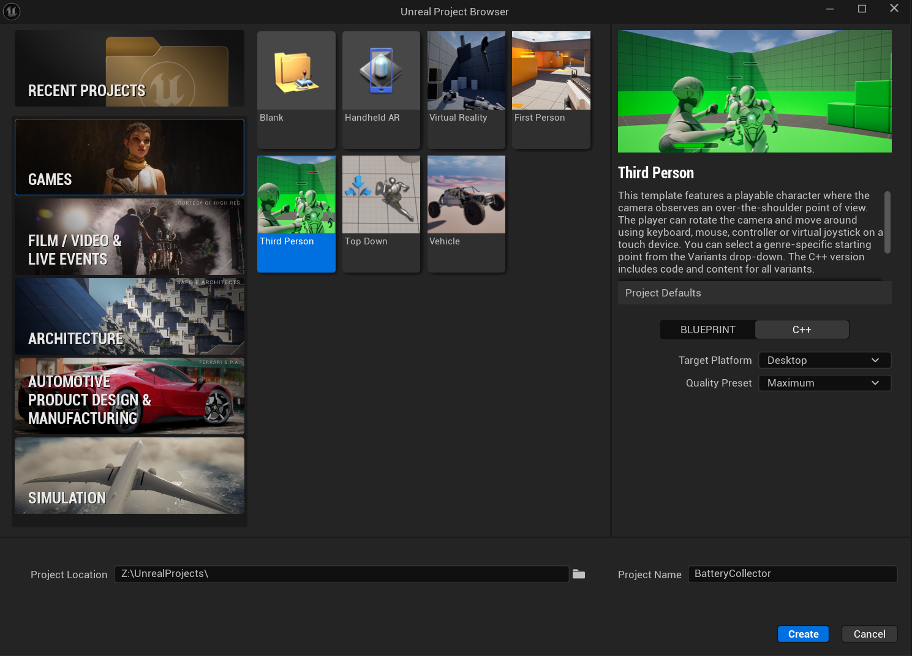
You need to name the project. Name the game “BatteryCollector”. If you name your project something different, you will have to adjust the code from the assignment. Click Create. That is going to generate the template code, which is a Character and a GameMode. It is going to compile the project and open it in the editor. For this assignment, we are using the Third Person template because it already has the camera controls and input setup and ready to go. You could try adding this same assignment content to the Vehicle template or your own game and see how it works for you. This is going to compile, and it will be open in the editor.
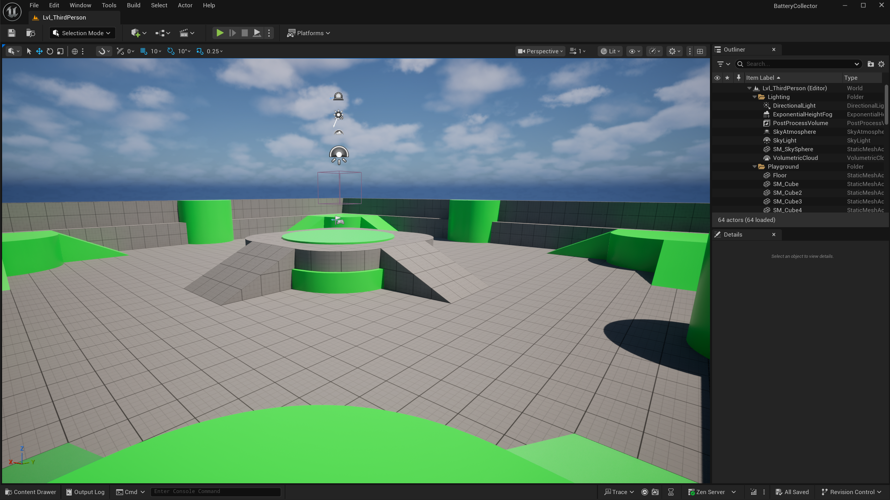
You can click Play and run around with the character. He has some jump and movement functionality already setup. There is some content you need to use from the Content Examples project as well. Download it from the Fab.
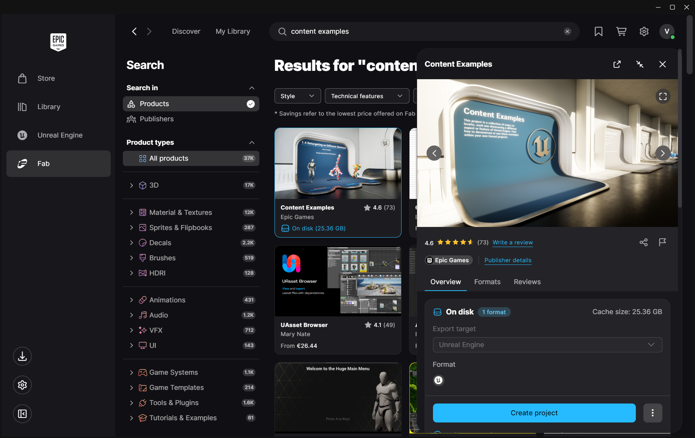

There are 2 things you are going to use from the Content Examples project. There is a room for the character to run around, and a battery mesh for our battery pickup.

In the Content Drawer, you can start typing. Search for “BP_DemoRoom”. This is the room we are going to use.

Select BP_DemoRoom in the Content Drawer, right-click, go to Asset Actions and select Migrate.
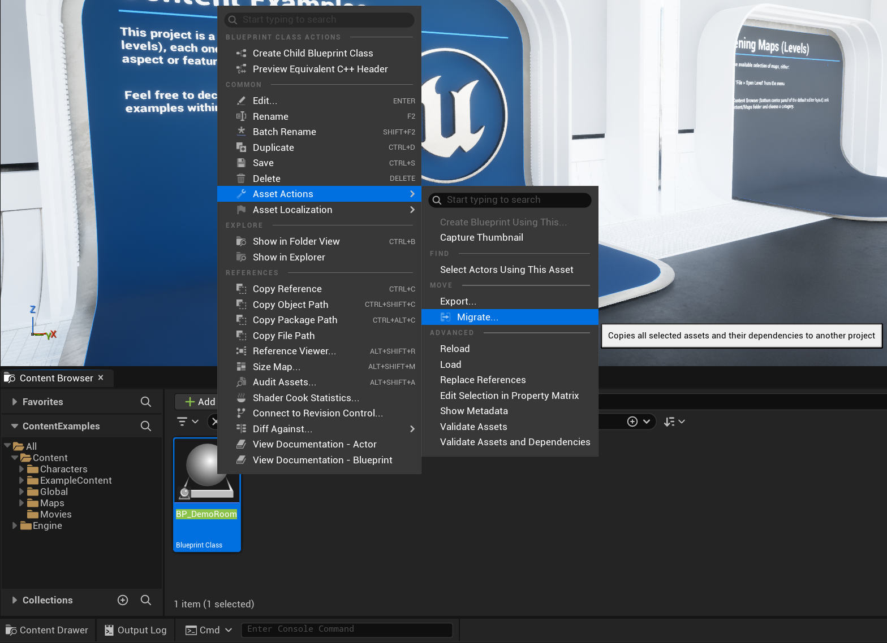
As you see, this pulls together the materials, Blueprints, and everything needed for this room to work in your project. It is most helpful to use the Migrate functionality rather than just copying the BP_DemoRoom UAsset file from one project to the next. Once the list of assets has come up, click OK.
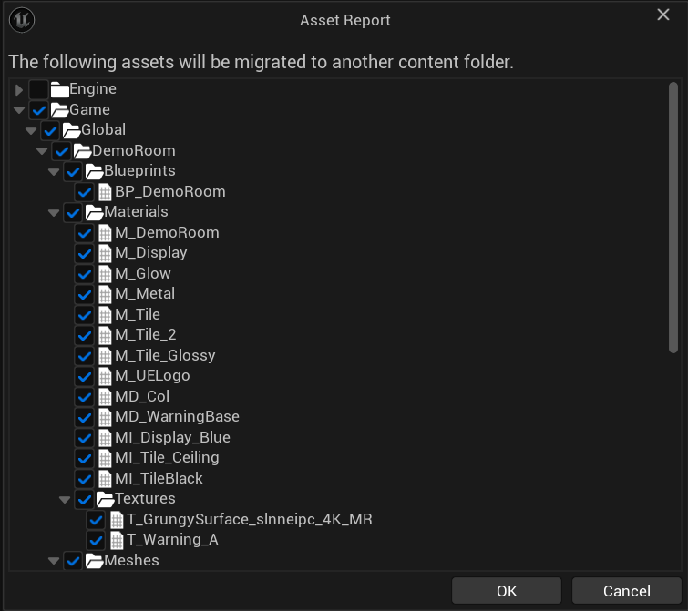
Find your project. We have UnrealProjects > BatteryCollector > Content. Put it in the Content folder and click Select Folder.

Now, let’s migrate the next two. Search for “Battery”. Select the SM_Battery_Medium. Right-click, go to Asset Actions, and select Migrate. Our asset list will pop up. Click OK. The Content folder you just selected should still be selected, so these next two will go quickly. Double check to make sure the Content folder is selected. Click OK.
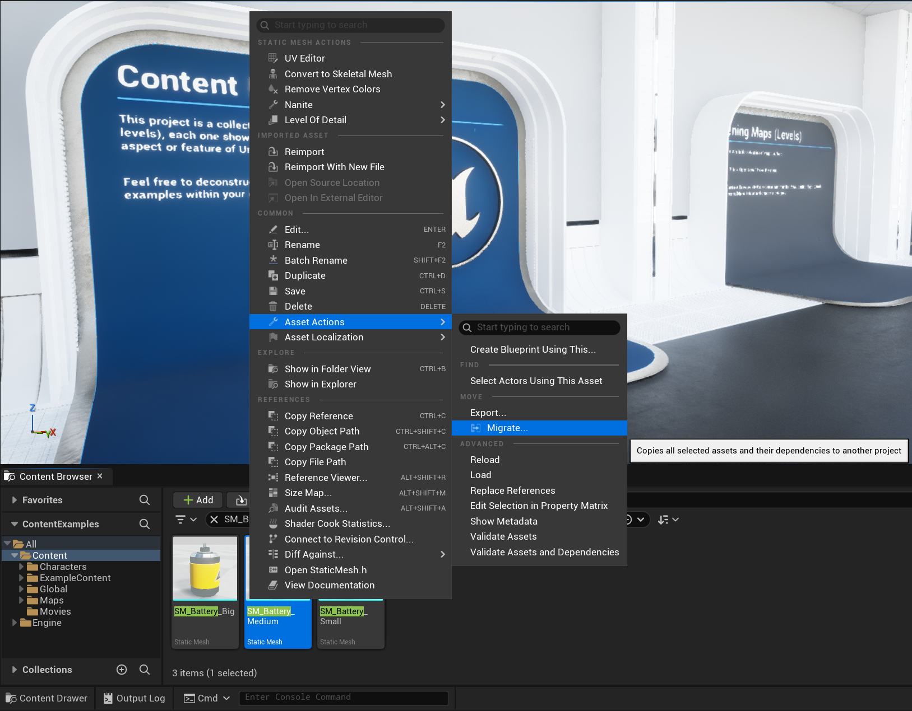
At this point, we are done with the Content Examples project and you can close it. Now, let’s do a little bit of setup in our main BatteryCollector project. First, we need a new level. Click File and select New Level. We are going to use the Basic level because it already has the sky, some lights, etc. set up.
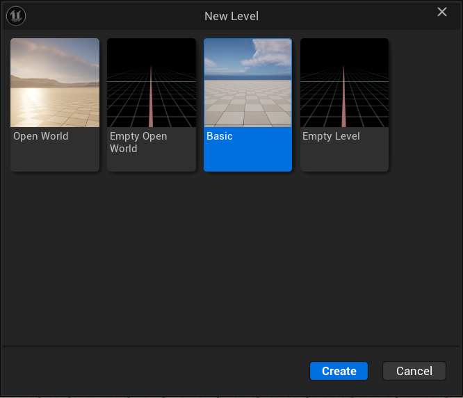
We are going to make a Maps folder within the Content folder. Select the Content folder. Right-click in the Content Browser and select New Folder. Call this “Maps”. Double-click Maps to open it. Click File and select Save Current Level. We are going to save our new level in the Maps folder. Call this “CollectionLevel”. Now, you can see the CollectionLevel here in the Content Drawer.
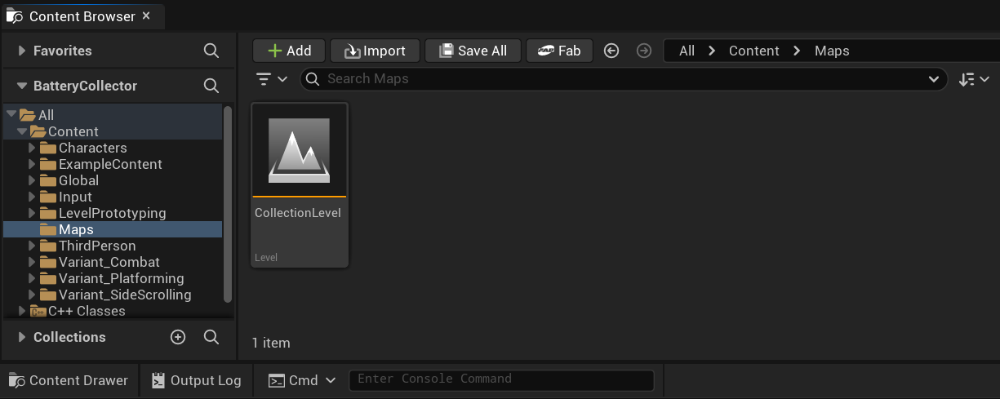
How do we get the project to use this level every time we open the project? To do that, click Edit on the menu. Click the drop down and select Project Settings. On the left, select Maps & Modes. Again, this is for working with the maps for your project.

There is the Game Default Map and the Editor Startup Map. This is the map the game will start with, and the map the editor will start with. Using the drop-down arrow, set both to CollectionLevel. That will save automatically in our DefaultEngine.ini configuration file.
Note that there is a Default GameMode which sets things like our Character, and the default GameMode. These are part of the Third Person template. If you use a different template, you will have a different Default Pawn Class and a different GameMode here.
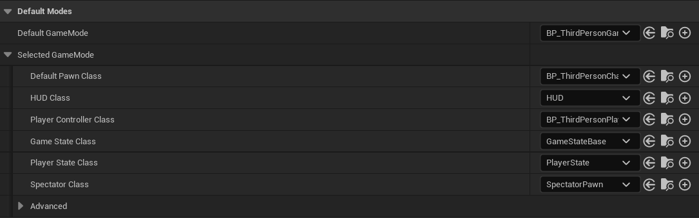
Close the Project Settings.

Now, let’s do some quick level design. In the World Outliner, select the Floor. Press Delete. Go to the Content folder in the Content Drawer. Search for “BP_DemoRoom”. Drag-and-drop BP_DemoRoom into the level.
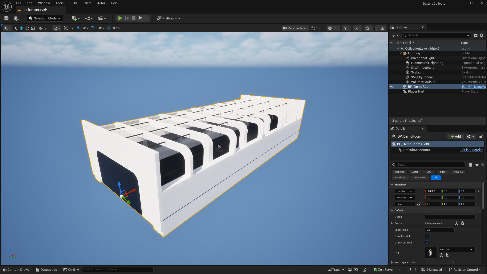
There are several properties already set up on the Blueprint. On the first room, set Width to 32, because we would like to enlarge the room so it is larger. Zoom out to see what is going on. Uncheck Pillar and Sub Pillar to remove all the pillars and make the room an open space. Uncheck Enclosed Left because our batteries are going to fall from the sky.

This is an open space where our character can run around, and the batteries can fall in without having to go through a roof or anything that doesn’t make sense. We are going to do more tweaks later, like lighting and post-processing. For now, this is enough to get us started. You used the Default level because it comes with things like lights, and a sky.
Click Play. The character will spawn in the middle, and you can run around. Close the Place Actors tab. Let’s save this map: go to the Content Drawer and click Save All. Click Save Selected. When we leave and come back, everything will be right where we left it. Now, you are ready to get started with your first code class.
3 Making Your First Pickup Class
You are going to make a very, very basic pickup. You can make new classes with Visual Studio, XCode, or whatever code IDE you are using, but there is a little bit of Unreal specific boilerplate which the C++ Class Wizard from the editor handles for you. We are going to start with the C++ Class Wizard so you can see the templates and how they can help you. You can access the C++ Class Wizard by clicking Tools and select New C++ Class.
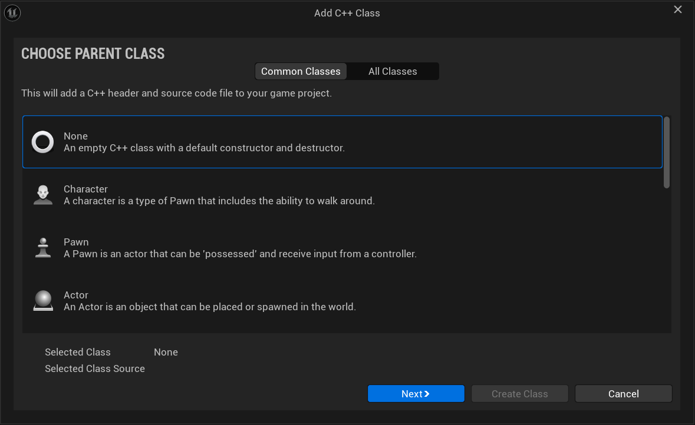
For this very basic pickup, you basically need something that sits in the world and is a visible representation so the Character could theoretically interact with it. Thinking of it that way, we should base our pickup on the Actor Class. An Actor is any object that can be placed or spawned in the world. If we had other functionality we needed, we could look for another class that might do some of that functionality for us already. If you want something to sit in the world, you base it on Actor. From the list of common classes, select Actor.

Click Next. Here, we will enter a name. Type “Pickup”. If you name your class something different, you will have to slightly adjust the code of the assignment to match your pickup class’ name. If you just want to follow along, name your class “Pickup”.
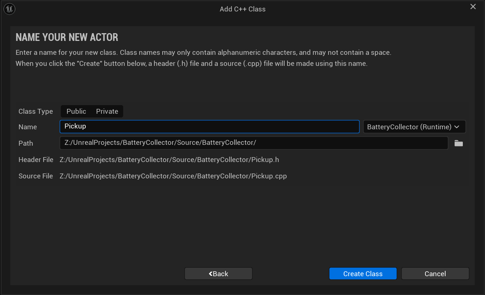
If you wanted, you could do some organization here so that your code will be stored differently. We are only going to have 10-12 files by the time we are done with this assignment. The project is not quite large enough to need a lot of sub-folders yet, so you are not going to set those up. As you can see, this is going to create a Header File and a Source File for you. Click Create Class. It will add code to the project. It is going to recompile and reload that module so you can see any code changes reflected when you click Compile in the editor. This is called hot reload, which is being able to change between the code editor of your choice and use the Compile button to see your changes.
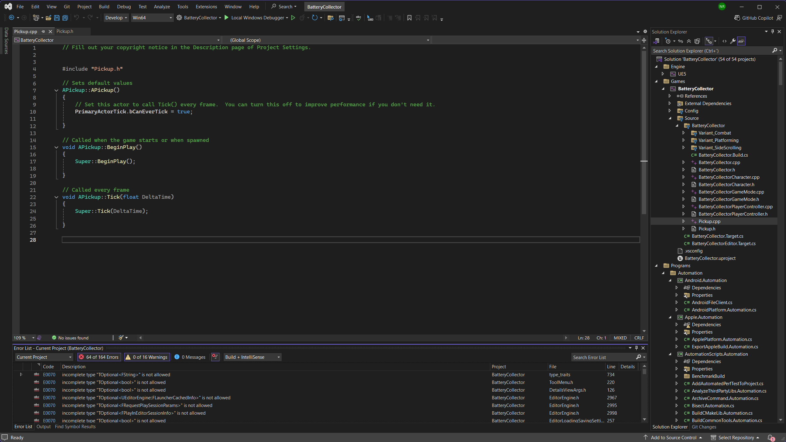
Let’s go through some of the basic things included with this template.
// Fill out your copyright notice in the Description page of Project Settings.
#pragma once
#include "CoreMinimal.h"
#include "GameFramework/Actor.h"
#include "Pickup.generated.h"
UCLASS()
class BATTERYCOLLECTOR_API APickup : public AActor
{
GENERATED_BODY()
public:
// Sets default values for this actor's properties
APickup();
protected:
// Called when the game starts or when spawned
virtual void BeginPlay() override;
public:
// Called every frame
virtual void Tick(float DeltaTime) override;
};As you can see, your pickup inherits from Actor which is included here. The generated header file is also included here. You can put other includes in here if you want to put other functionality in your pickup and you need to interact with other classes. Make sure you don’t put anything under the Pickup.generated.h file. This is something the Unreal Build Tool (UBT) looks for as the last thing in the list.
Here, we have the class declaration. Above the class declaration is this UCLASS() macro. The UCLASS() macro helps set up the class so the editor actually knows about it for things like garbage collection, setting keywords, reflection, and all the things that come with being a UObject. All Actors are based on UObjects. The UClass does a lot of that functionality for you. GENERATED_BODY() is more macro boilerplate text which does more of the engine linking. As you can see here, there are 3 functions already set up for us. First, APickup is the constructor where we can set default values. Next BeginPlay, which will be called when the pickup spawns or when the game starts. Third, is the Tick function but we are going to turn off this functionality in a second. Click Pickup.cpp to go over to the source file:
// Fill out your copyright notice in the Description page of Project Settings.
#include "Pickup.h"
// Sets default values
APickup::APickup()
{
// Set this actor to call Tick() every frame. You can turn this off to
// improve performance if you don't need it.
PrimaryActorTick.bCanEverTick = true;
}
// Called when the game starts or when spawned
void APickup::BeginPlay()
{
Super::BeginPlay();
}
// Called every frame
void APickup::Tick(float DeltaTime)
{
Super::Tick(DeltaTime);
}In the source file, you can see the Pickup.h file you were just in is included. Our constructor already has the pickup set up so it can tick. This is a very basic pickup and we are not going to do any ticking functionality. Set bCanEverTick to false. You could also delete the Tick function now that you have turned off the Tick functionality. You can also leave it because it is not going to get called as long as bCanEverTick is false. The BeginPlay function has also been automatically defined for us. Right now, all BeginPlay does is call the Actor’s BeginPlay functionality like registering it with the scene, and things like that. That is what the Super::BeginPlay function is for.
So, what is the first thing our pickup needs? Most pickups have a visual representation within the level. Let’s set ours up to have a Static Mesh Component. We are going to make our Static Mesh Component private. This means we can only set up and alter the Static Mesh Component within the pickup code. No other code classes, nor Blueprints, nor anything else can directly access the Static Mesh Component.
UCLASS()
class BATTERYCOLLECTOR_API APickup : public AActor
{
GENERATED_BODY()
public:
// Sets default values for this actor's properties
APickup();
protected:
// Called when the game starts or when spawned
virtual void BeginPlay() override;
public:
// Called every frame
virtual void Tick(float DeltaTime) override;
private:
/** Static mesh to represent the pickup in the level */
UStaticMeshComponent* PickupMesh;
};This is going to be our “Static Mesh to represent the pickup in the level”. Just like we have the UCLASS() macro, we also have UPROPERTY() and UFUNCTION() macros. We are going to use the UPROPERTY() macro here. Components are basically regarded as variables, but we need to add some specific keywords in here.
private:
/** Static mesh to represent the pickup in the level */
UPROPERTY(VisibleAnywhere, BlueprintReadOnly, Category = "Pickup",
meta = (allowprivateaccess = true))
UStaticMeshComponent* PickupMesh;BlueprintReadOnly means that if you place the pickup directly in the level or create a Blueprint based on the pickup, you can see this component exists. However, you can’t remove it or edit it in a way so we wouldn’t rely on the pickup mesh being there and being a component of our Actor. You can also put a category keyword on it. We are going to add a Pickup category. This means in the Details panel, we can look under the Pickup category and our mesh will show up. The last thing we are going to use is this meta keyword. There are a few of these meta keywords throughout sample code, some of the templates, and especially on components. This code is specific to components in that this is private. We need to be able to change properties about the mesh such as which Static Mesh is assigned, or what size it is, etc. from within the Blueprint or within the level.
This is private, but we may need to return the Static Mesh and alter it from another class. Maybe when the Character powers up, all of the pickups start glowing and we need to change the material on the Static Mesh. Let’s make an accessor function for that. This function will “Return the mesh for the pickup.”
public:
// Called every frame
virtual void Tick(float DeltaTime) override;
/** Return the mesh for the pickup */
FORCEINLINE UStaticMeshComponent* GetMesh() const { return PickupMesh; }We are going to use a little bit of magic here with the FORCEINLINE keyword. We want to change the material on the mesh from another class, and this function will allow us to do that. We made the GetMesh function const because it is not allowed to modify our Mesh Component, it will just return it for us. Finally, let’s set up the component within our constructor so it is ready to go when the pickup is created:
APickup::APickup()
{
// Set this actor to call Tick() every frame. You can turn this off to
// improve performance if you don't need it.
PrimaryActorTick.bCanEverTick = false;
// Create the static mesh component
PickupMesh = CreateDefaultSubobject<UStaticMeshComponent>(TEXT("PickupMesh"));
RootComponent = PickupMesh;
}First, we will “Create the Static Mesh Component”. There is a helper that will do that for us called CreateDefaultSubobject. UStaticMeshComponent is the type of component we are making. We can also give it some display text. We also want to set that StaticMeshComponent as the Root Component. If we add other effects or another mesh later, they would all be based on the size and location of the PickupMesh. At this point, we can compile. Switch back to the editor. Press CTRL+ALT+F11, and the toast will pop up in the corner. If you have an error during compilation for some reason, you will be able to click on this to show the log and get some debug messages.
In the next section, you are going to add the actual activation and deactivation functions for the pickup because that is the other baseline functionality we want all pickups to have.
4 Adding Variables and Functions
Now, we will add our activity code to the pickup. Go back to Visual Studio. We want all pickups to have a state of whether it is active, to have ways to report whether it is active, and also to change it. Let’s start with our variable for whether it is active. We are going to make this variable protected which means we can change it in this code class, another code class based on this one, or in a Blueprint. If we wanted to create a Blueprint based on pickup and then directly toggle the pickup behavior, we could do that.
protected:
/** True when the pickup can be used, and false when the pickup is deactivated */
bool bIsActive;This will be “True when the pickup can be used, and false when pickup is deactivated”. Again, that is very straightforward. The variable is just a Boolean. It will be true when the pickup can be used, and false when the pickup can’t be used. We will go to the constructor where we set the default values.
APickup::APickup()
{
// Set this actor to call Tick() every frame. You can turn this off to
// improve performance if you don't need it.
PrimaryActorTick.bCanEverTick = false;
// All pickups start active
bIsActive = true;
// Create the static mesh component
PickupMesh = CreateDefaultSubobject<UStaticMeshComponent>(TEXT("PickupMesh"));
RootComponent = PickupMesh;
}All pickups start active. If you had a specific type of pickup where you wanted it to be inactive until the character did something, you could make a Blueprint or a code class based on this variable and override it in the constructor or the Construction Script because that variable is protected. Again, because this variable is protected, it can only be changed by other types of pickups and not by the Character or the GameMode. We would need to make functions for that. Let’s go ahead and do that now. We will create a function to return if the variable is active or not.
/** Return whether or not the pickup is active */
UFUNCTION(BlueprintPure, Category = "Pickup")
bool IsActive();The function to return will return a Boolean. Boolean functions should ask a question that has a true or false answer. Is it active? Like we used the UPROPERTY() macro before, we are going to use the UFUNCTION() macro on this function. We are going to use the keyword BlueprintPure, which will be explained shortly. Then, we will create a function to change whether or not the variable is active.
/** Allows other classes to safely change whether or not pickup is active */
UFUNCTION(BlueprintCallable, Category = "Pickup")
void SetActive(bool NewPickupState);The SetActive is not going to return anything. It will be a void function. This is also going to be a UFunction. This function is going to be BlueprintCallable.
BlueprintPure and BlueprintCallable are both things defined in code, but can be called from Blueprints. Technically BlueprintPure functions can modify things, but in general they shouldn’t. BlueprintPure functions are run every time their output is used. A BlueprintPure function that pops something off a stack that is called twice, either with a loop or in 2 separate nodes, will pop 2 things off the stack. On the other hand, BlueprintCallable functions only run when the input execution pin is hit. BlueprintCallable functions save their results in the output pins. BlueprintCallable functions can be used for modifying calls. Expensive calculations that aren’t expected to change frequently are better in BlueprintCallable functions than BlueprintPure functions. Fast calculations that will frequently change are better to make in BlueprintPure functions, or by adding multiple Blueprint Callable nodes to your graph.
Neither of these two functions you just created do anything right now. Let’s write the definition in the Pickup.cpp source file.
// Returns active state
bool APickup::IsActive()
{
return bIsActive;
}
// Changes active state
void APickup::SetActive(bool NewPickupState)
{
bIsActive = NewPickupState;
}We have a Boolean for IsActive. It is very simple. Setting it up with these public functions that manipulate a protected variable keeps things code safe. This is especially so if you have multiple people working on a project and they may not understand the rule setup in code, or if you have people trying to have different things interact together.
Our setter is also very straightforward. If you also wanted to print the new pickup state to the screen or change how the mesh looks depending on whether it is active, you can handle all of that in here. It is a little more complex than just changing bIsActive, so you wouldn’t want to change bIsActive without those associated pieces of code.
Double check that everything is saved. There is our Boolean, our getter and our setter. Let’s go back to the editor and compile. Press CTRL+ALT+F11. Now, that just finished compiling, let’s make a Blueprint based on our pickup. Right-click on the Content folder and select New Folder. Call this “Blueprints” just to keep everything organized as we go forward.
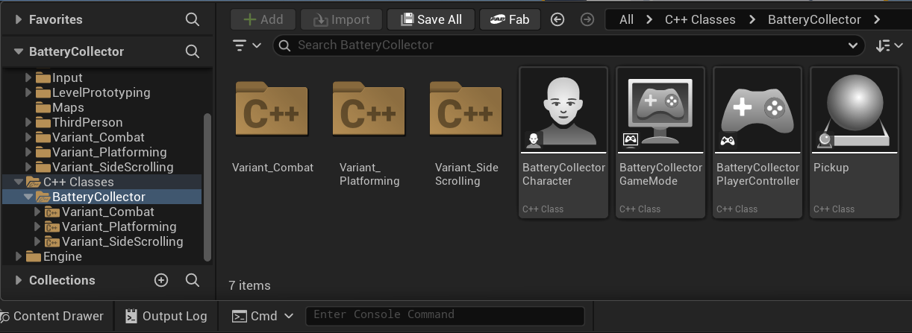
In the Content Drawer go to C++ Classes, and select BatteryCollector. Right-click Pickup and select Create Blueprint class based on Pickup.
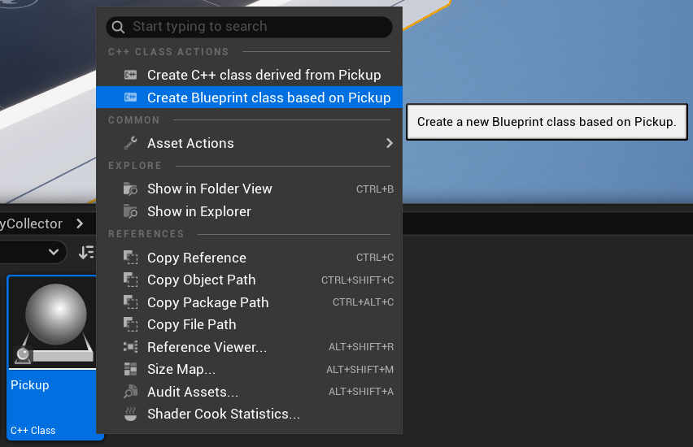
Save it in the Blueprints folder.

Call this “BP_Pickup”. Click Create Blueprint Class.
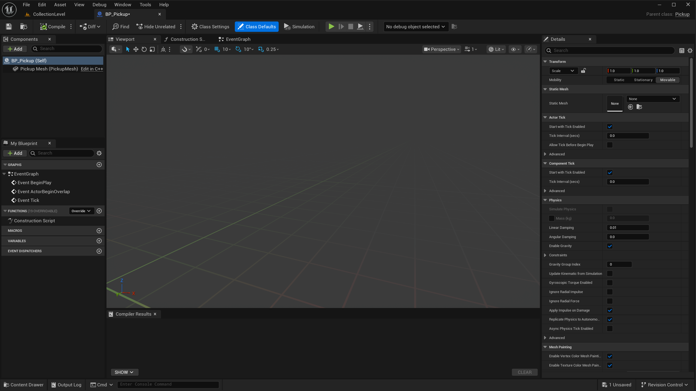
Save this, close and reopen it, so you can see something. Now if you reopen BP_Pickup, this is a Data-Only Blueprint.
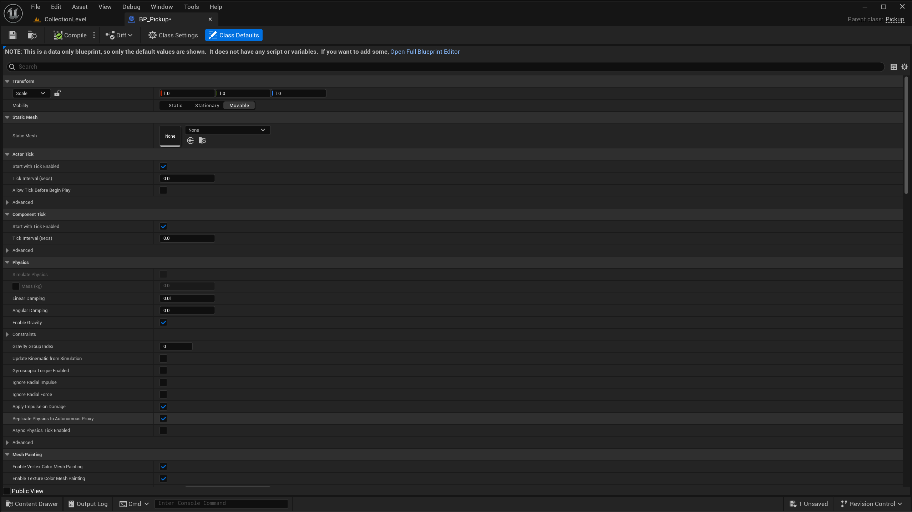
Because this won’t have any full node behavior, you can leave it in this state. There is our Static Mesh. Set the Static Mesh to SM_Cube.
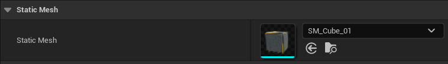
Click Compile and click Save. Go to CollectionLevel. Drag-and-drop BP_Pickup into the world.

Click Play. Our new pickup is right there and ready for us to interact with if it had any way to call that active changing function.

Now, to show you those 2 nodes that you made. Go back to BP_Pickup to open the full Blueprint Editor.

Right-click in the graph, and scroll down to the Pickup category.
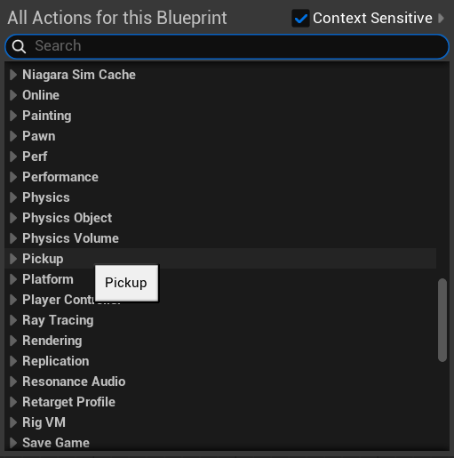
Remember, we put the Pickup category on all of our nodes. Expand Pickup and you see our Is Active function.
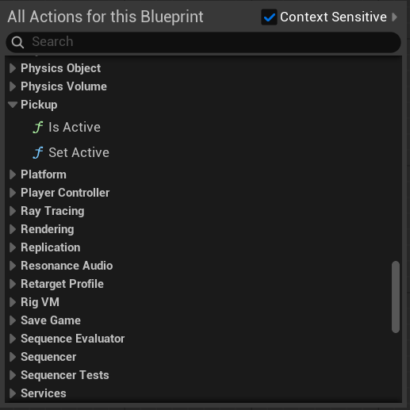
Add both to the Event Graph.

Is Active is the BlueprintPure function, so it doesn’t have any execution pins. Set Active is the BlueprintCallable function and it does have execution pins. It can be specifically called on Event BeginPlay, if we don’t necessarily want them to be active. Select both nodes and press Delete. We don’t want to set up any behavior. This was just for you to see the difference between those 2 nodes and save.
In the next section, we will make a Battery pickup class that inherits from the Base Pickup and gives it a little more functionality.
5 Extending the Pickup Class
You have just made a very basic pickup. It has no physics. It just has a pickup mesh to represent it in the world, which is this very artistic cube here. We set up whether the pickup is active or inactive. Now, we are going to make the battery that is really going to be one of the key parts of our gameplay. Eventually, the battery pickup will have physics, so it can fall from the sky. It will have a power level, and it will be destroyed after we pick it up. In this section we are mostly going to focus on creating the battery that inherits from the Base Pickup. We will also set the physics changes and show how that works within the project:
- Base Pickup (parent class)
- No physics
- Activates/deactivates
- Battery pickup (child)
- Physics on
- Power level
- Destroys after picked up
In the Content Drawer, expand C++ Classes. You can Right-click on Pickup and select Create C++ class derived from Pickup. This is the same way we created our Blueprint before. However, if you want to find some of the more complex classes, click the New C++ Class to add a new C++ class.
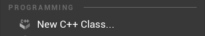
We have a base list of classes such as Character, Pawn, Actor, HUD, Blueprint Function Library, and a lot of fairly common and useful things. If you need to branch out and find any of the classes you can inherit from, click the All Classes button. Here, you have a list of just about everything. Search for “Pickup”. Select Pickup and click Next.
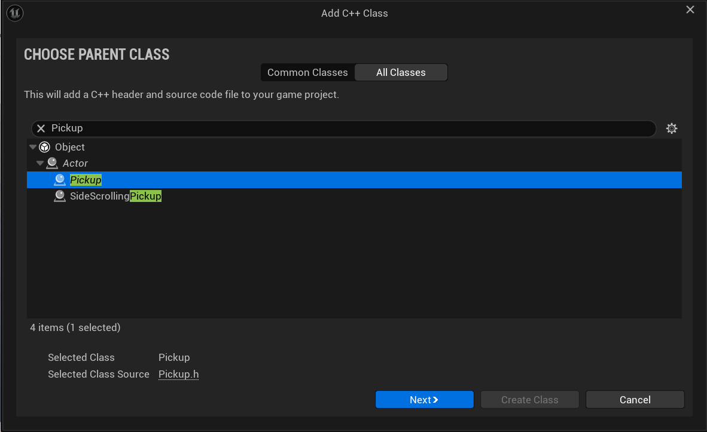
Call this class “BatteryPickup”.

If you name the class something different, your code will look different than the rest of this assignment but you should still be able to follow along. Click Create Class. That is going to compile and then reload the module.
We will start changing the new Battery Pickup class functionality.
// Fill out your copyright notice in the Description page of Project Settings.
#pragma once
#include "CoreMinimal.h"
#include "Pickup.h"
#include "BatteryPickup.generated.h"
UCLASS()
class BATTERYCOLLECTOR_API ABatteryPickup : public APickup
{
GENERATED_BODY()
};Again, include Pickup.h because that is what we inherit from. We have the generated header file BatteryPickup.generated.h. We don’t have nearly as much boilerplate as we did in the Pickup.h file.
If you need an example to look at, you can see this is how you create the BeginPlay override. That is why the template code is nice. We are going to make our own constructor and we need to make it public. Copy template code: go to Pickup.h and copy the constructor declaration. Go to BatteryPickup.h, and paste the code.
// Fill out your copyright notice in the Description page of Project Settings.
#pragma once
#include "CoreMinimal.h"
#include "Pickup.h"
#include "BatteryPickup.generated.h"
UCLASS()
class BATTERYCOLLECTOR_API ABatteryPickup : public APickup
{
GENERATED_BODY()
public:
// Sets default values for this actor's properties
ABatteryPickup();
};Go to BatteryPickup.cpp:
// Fill out your copyright notice in the Description page of Project Settings.
#include "BatteryPickup.h"
// Set default values
ABatteryPickup::ABatteryPickup()
{
GetMesh()->SetSimulatePhysics(true);
}As it was said before, this pickup is going to fall from the sky. The batteries are going to spawn in space and fall down on the character, where he can collect them. Remember, we had that public GetMesh function from before. We are going to use that here. We have that mesh and there are all kinds of things we can do. We can add an impulse and shoot it across the room. There are a lot of forces and impulses we could add. We could change the offset or rotation, and all the things you can do with a Static Mesh Component. We want to set simulate physics to true. This way, as soon as the batteries spawn in, they will fall from the sky.
Remember when you placed a pickup box in the level, it just hovered in the air? Obviously, physics was not set to simulate on the box. That is the only change we are going to make right now. Later, we are going to come back to add power and collection. Go back to the editor and press CTRL+ALT+F11 to compile.
Now, we will make a Blueprint based on our Battery Pickup. To set the Static Mesh property on either the Pickup or the BatteryPickup, we could have hard coded those references. If we wanted to move around the meshes or easily tweak it without having to recompile, that would be trickier. Creating a code class with the variables you know you want to set and then creating a Blueprint to set those variables is the recommended best practice in a lot of cases.
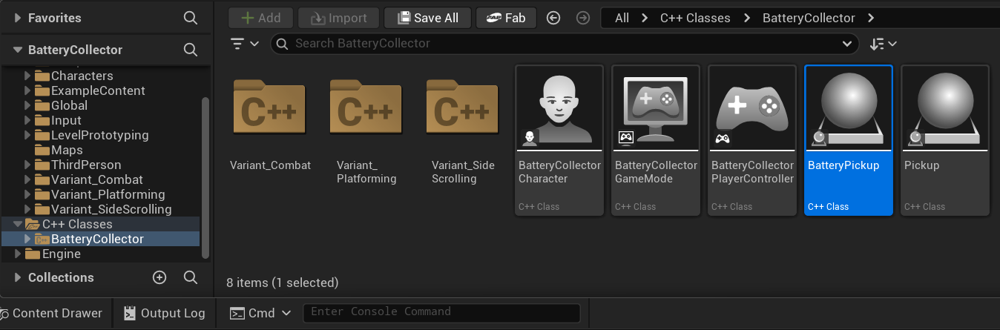
Right-click on BatteryPickup and select Create Blueprint class based on BatteryPickup. Call this “Battery_BP”. Save it in the Blueprints folder. Click Create Blueprint Class. It is going to open the full Blueprint Editor.
In the Components tab, select PickupMesh (inherited). Click the Static Mesh drop down and scroll to find SM_Battery_Medium we imported from the Content Examples project.
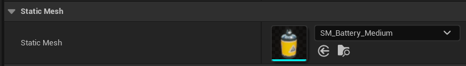
Click Compile. We are ready to try this out. Go to CollectionLevel. Drag-and-drop Battery_BP into the world. Drag it up with the blue arrow. Click Play. The battery did fall, while the box is still in the air. Notice that the battery fell through the floor.
5.1 Fixing Battery Collision
Select the Content folder and search for “Battery”.
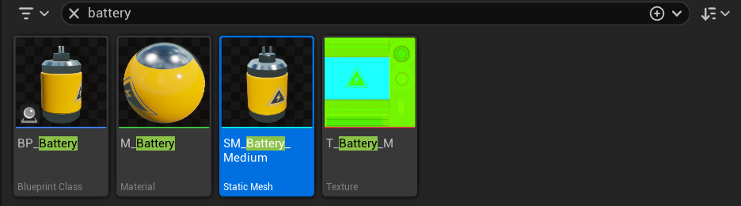
Open SM_Battery_Medium. In the Static Mesh Editor, you can look at the collision. Notice there are no green lines showing up. There are no primitives, and that is why it is falling through the world. There is no box showing where the collision would be. It can never collide. It can never stop on the floor. It is going to keep falling forever.
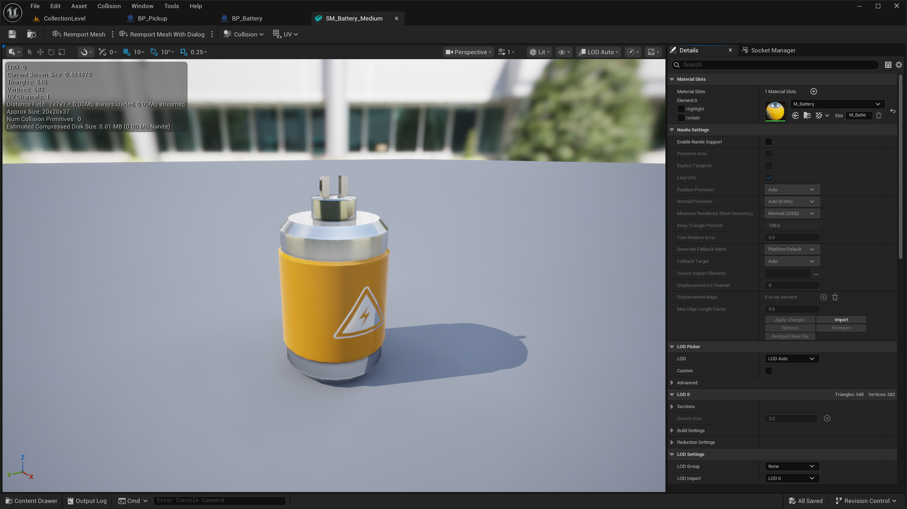
Let’s fix this really quick. In the top menu, click Collision. Select Add 10DOP-Z Simplified Collision. This makes a cylinder on the Z axis. The cylinder is centered on the Z axis.
You see how the top of the battery is inset. If you want to fit the cylinder closer, we could click Collision and select Remove Collision. Click Collision and select 18DOP Simplified Collision. This collision is closer around the battery. We can go with that so it will roll around on the top edge a little bit more. Click Save.
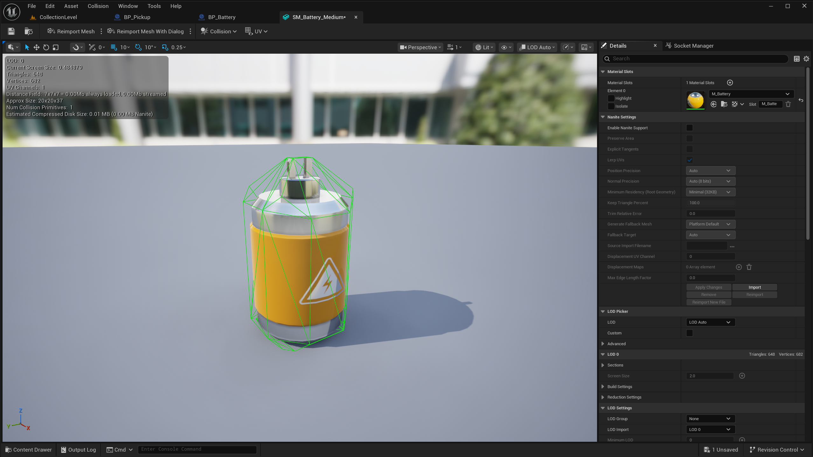
Go to CollectionLevel. Click Play. It sits on the floor. We can come over and kick it along the ground. We are going to add more functionality to the battery in upcoming sections.

6 Creating the Spawning Volume
You are going to set up our spawn volume. Until now, we have been dragging in pickups to test like this battery or the cube. That is great for testing. For gameplay, we want these pickups to fall from the sky at regular intervals. It will take a few sections on this assignment to set it up entirely. At the end, you are going to have a very awesome functional spawn volume. You will have a spawn volume that will have functionality to determine where to spawn, what to spawn, and when to spawn.
While you are in the Level Editor, delete the two pickups. We are going to create another code class. Go to the Content Drawer and select BatteryCollector, under C++ Classes. Right click and select New C++ Class.

Our spawn volume is going to be something that is placed in the level. It doesn’t need too much more than that. Select Actor.
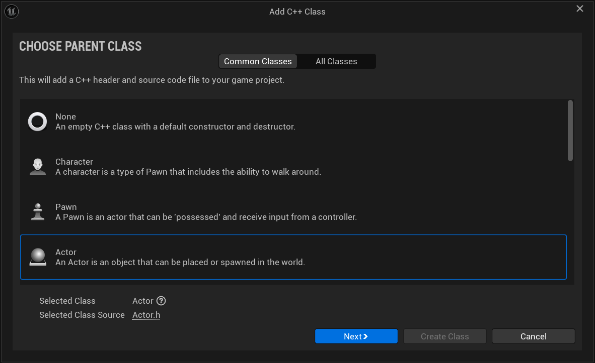
Click Next. Call this “SpawnVolume”. Click Create Class.
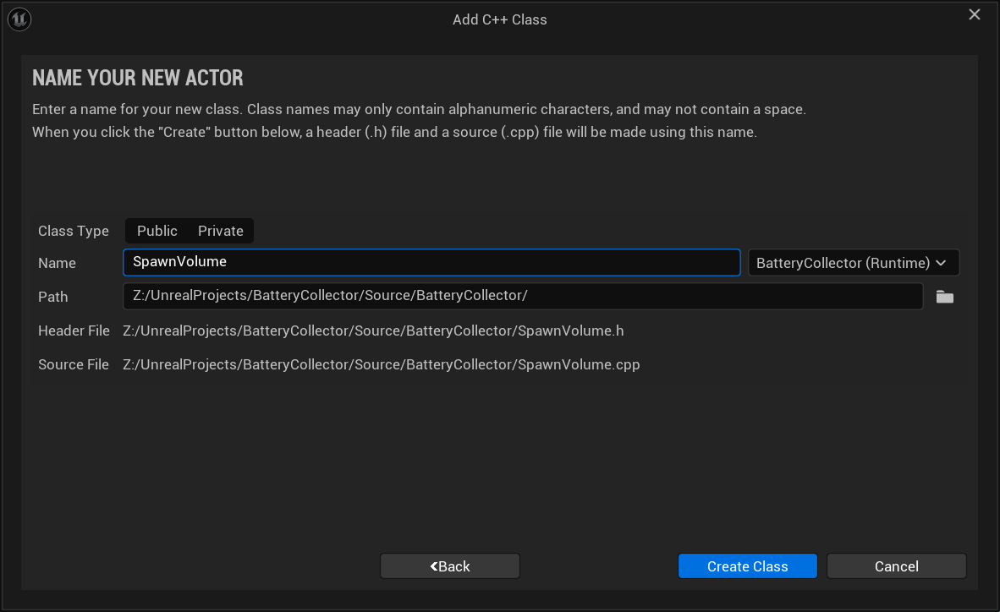
6.1 Where To Spawn
Our SpawnVolume.h header and source file have opened in Visual Studio. The WhereToSpawn code is going to look very similar to the code when we added a Mesh Component to our pickup. Again, we are going to make a component. This time it will be a Box Component, which we will make private and have a function to access it publicly.
#include "CoreMinimal.h"
#include "GameFramework/Actor.h"
#include "SpawnVolume.generated.h"
class UBoxComponent;
UCLASS()
class BATTERYCOLLECTOR_API ASpawnVolume : public AActor
{
GENERATED_BODY()
public:
ASpawnVolume();
protected:
virtual void BeginPlay() override;
public:
virtual void Tick(float DeltaTime) override;
/** Returns the WhereToSpawn subobject */
FORCEINLINE UBoxComponent* GetWhereToSpawn() const { return WhereToSpawn; }
/** Find a random point within the BoxComponent */
UFUNCTION(BlueprintPure, Category = "Spawning")
FVector GetRandomPointInVolume();
private:
/** Box Component to specify where the pickups should be spawned */
UPROPERTY(VisibleAnywhere, BlueprintReadOnly, Category = "Spawning",
meta = (AllowPrivateAccess = "true"))
UBoxComponent* WhereToSpawn;
};Call this “WhereToSpawn”. This component will have a lot of the same UPROPERTY keywords as our other component. It will be in the Spawning category. We will add the meta keyword as well. We are not going to make a Blueprint of the spawn volume during this assignment. We are going to place the spawn volume directly in the level and manipulate it there to show a different workflow. That is why we left this BlueprintReadOnly keyword.
In Pickup.h the function bool IsActive didn’t use FORCEINLINE because the UFUNCTION() macro is not compatible with making a function FORCEINLINE. If you wanted to make the GetMesh a BlueprintCallable function, you would not use FORCEINLINE.
Go to SpawnVolume.cpp:
#include <Components/BoxComponent.h>
ASpawnVolume::ASpawnVolume()
{
// Set this actor to call Tick() every frame. You can turn this off to
// improve performance if you don't need it.
PrimaryActorTick.bCanEverTick = false;
// Create the Box Component to represent the spawn volume
WhereToSpawn = CreateDefaultSubobject<UBoxComponent>(TEXT("WhereToSpawn"));
RootComponent = WhereToSpawn;
}Although it says “a volume” in the comment, it is going to be more of a flat, rectangular prism within the world. We also set the Box Component as the root Component. Since we are not going to use Tick in the spawn volume, we can make that false.
Lastly, create a function to find a random point in our volume. To use these functions, first go up to the top of SpawnVolume.h:
#include <Kismet/KismetMathLibrary.h>Kismet Math Library has a function called RandomPointInBoundingBox, which takes an Origin and a BoxExtent as variables.
FVector ASpawnVolume::GetRandomPointInVolume()
{
FVector SpawnOrigin = WhereToSpawn->Bounds.Origin;
FVector SpawnExtent = WhereToSpawn->Bounds.BoxExtent;
return UKismetMathLibrary::RandomPointInBoundingBox(SpawnOrigin, SpawnExtent);
}If you look, RandomPointInBoundingBox returns a vector. It takes the Origin and the BoxExtent. We will supply the SpawnOrigin and the SpawnExtent we previously pulled out. At this point, compile the code to check that everything is OK. You can also compile directly in Visual Studio: right-click on BatteryCollector and select Build.
7 Defining What to Spawn
You have wrote code in the SpawnVolume which told the spawn volume where to spawn. Throughout this section, you are going to set up what to spawn. You are going to use a protected variable. All subclasses, whether they are code or Blueprint, can set WhatToSpawn. No other class, such as the GameMode or Character, can change the pickup to spawn.
protected:
/** The pickup to spawn */
UPROPERTY(EditAnywhere, Category = "Spawning")
TSubclassOf<class APickup> WhatToSpawn;You are going to use TSubclassOf. You could use a UClass pointer here. Using TSubclassOf means we can enforce that only APickup or any child class, like our BatteryBlueprint or PickupBlueprint, can be set on the WhatToSpawn variable. The WhatToSpawn variable is protected and can only be set in this class or in the child SpawnVolume classes. We want to be able to edit WhatToSpawn directly on the Details panel, which is why it is EditAnywhere. Make the SpawnPickup function private:
private:
/** Handle spawning a new pickup */
void SpawnPickup();We trust the SpawnVolume to handle the right spawning, but no other classes can handle spawning. SpawnPickup will not be able to be called from Blueprints. Go to the SpawnVolume.cpp source file to define the SpawnPickup behavior.
void ASpawnVolume::SpawnPickup()
{
// If we have something to spawn:
if (WhatToSpawn != nullptr)
{
// Check for a valid World:
UWorld* const World = GetWorld();
if (World)
{
// Set the spawn parameters
FActorSpawnParameters SpawnParams;
SpawnParams.Owner = this;
SpawnParams.Instigator = GetInstigator();
// Get a random location to spawn at
FVector SpawnLocation = GetRandomPointInVolume();
// Get a random rotation for the spawned item
FRotator SpawnRotation;
SpawnRotation.Yaw = FMath::FRand() * 360.0f;
SpawnRotation.Pitch = FMath::FRand() * 360.0f;
SpawnRotation.Roll = FMath::FRand() * 360.0f;
// Spawn the pickup
APickup* const SpawnedPickup = World->SpawnActor<APickup>(
WhatToSpawn, SpawnLocation, SpawnRotation, SpawnParams);
}
}
}It is a void function which doesn’t return anything. It is just going to spawn our pickups. If we have set something to spawn, we are going to check for a valid world because that is very important.
We must check for a valid World. If you have ever tried to access UWorld and the editor crashes when you try to open it, then it is probably missing its World check.
GetWorld is ready for us to call and verify. We need another if statement. The reason we are storing this and not doing an if GetWorld here is because we are later going to use World when we are spawning. UWorld contains the general SpawnActor function. If we have set something to spawn, then it continues to the next block and checks for a valid World. If both statements are true, then we can start working on the spawn parameters.
Since you had to use APickup, this means you need to go to the top and include Pickup.h:
#include "Pickup.h"Once you are working with the Pickup class directly you might need to know more information about the pickup, that is when you will include it. You can compile. Right-click BatteryCollector and select Build.
8 Setting Timers for Spawning
Previously, we were working on our spawning volume. We wrote code to specify where to spawn and what to spawn. Now, we are going to work on some code with timers to call the spawning function and define when to spawn. Go to SpawnVolume.h. We are going to set up some new variables. We are going to create a Timer Handle. We are going to make the Timer Handle protected so only this class or child classes can reset and work with the timer. This does not get a UPROPERTY() macro applied to it because Timer Handles can’t be properties. We are also going to make protected values for a minimum and maximum spawn delay.
protected:
FTimerHandle SpawnTimer;
/** Minimum spawn delay */
UPROPERTY(EditAnywhere, BlueprintReadWrite, Category = "Spawning")
float SpawnDelayRangeLow;
/** Maximum spawn delay */
UPROPERTY(EditAnywhere, BlueprintReadWrite, Category = "Spawning")
float SpawnDelayRangeHigh;
private:
/** The current spawn delay */
float SpawnDelay;In the private section of the header, we are going to store the actual SpawnDelay which is going to fall somewhere in that range. We are making this private because we are only going to handle it on the code side. We don’t want to be able to edit this in the Blueprint because we want to set all the rules in code and not allow them to be changed by any child class.
Now, let’s go over to SpawnVolume.cpp and set some default values for our SpawnDelayRange:
ASpawnVolume::ASpawnVolume()
{
PrimaryActorTick.bCanEverTick = false;
WhereToSpawn = CreateDefaultSubobject<UBoxComponent>(TEXT("WhereToSpawn"));
RootComponent = WhereToSpawn;
// Set the spawn delay range
SpawnDelayRangeLow = 1.0f;
SpawnDelayRangeHigh = 4.5f;
}We will set some new values for the SpawnDelayRange when we place them in the level. A delay of every second to just under 5 seconds is enough so you are not getting tons of pickups piling up, but you are also not waiting for one to spawn.
In BeginPlay, we are going to set the first time the timer is called. First, we need to get the time. Set a value for SpawnDelay. This is going to use the FMath function to get a random value in range for a float.
void ASpawnVolume::BeginPlay()
{
Super::BeginPlay();
SpawnDelay = FMath::FRandRange(SpawnDelayRangeLow, SpawnDelayRangeHigh);
GetWorldTimerManager().SetTimer(SpawnTimer, this,
&ASpawnVolume::SpawnPickup, SpawnDelay, false);
}If we had a formula where we wanted a more complex delay towards the low or high end, then we could break this out into its own function. We always want a random value within the range between the low and the high. Then, we use the world timer manager. This keeps track of all the timers that are going on throughout your project. It has a lot of built in functionality such as clearing timers, figuring out how long a timer has been running, determining whether or not a timer is active, etc. We take the Timer Handle for this class, bind it to the SpawnPickup function, fire after the SpawnDelay, and don’t loop.
Copy this block of code and put it at the end of your Spawning function, after the script where the pickup is actually spawned, so it will only get called if WhatToSpawn is valid and we have a World:
void ASpawnVolume::SpawnPickup()
{
// If we have something to spawn:
if (WhatToSpawn != nullptr)
{
// Check for a valid World:
UWorld* const World = GetWorld();
if (World)
{
// ... (spawn parameters, location, rotation as before) ...
APickup* const SpawnedPickup = World->SpawnActor<APickup>(
WhatToSpawn, SpawnLocation, SpawnRotation, SpawnParams);
SpawnDelay = FMath::FRandRange(SpawnDelayRangeLow, SpawnDelayRangeHigh);
GetWorldTimerManager().SetTimer(SpawnTimer, this,
&ASpawnVolume::SpawnPickup, SpawnDelay, false);
}
}
}After we spawn one pickup, we will reset the timer to another random time between the low and high end of the range. Switch back to the editor and press CTRL + ALT + F11.
Now, drag your SpawnVolume directly to your level. Then, press R to use the Scale tool to make it slightly larger.
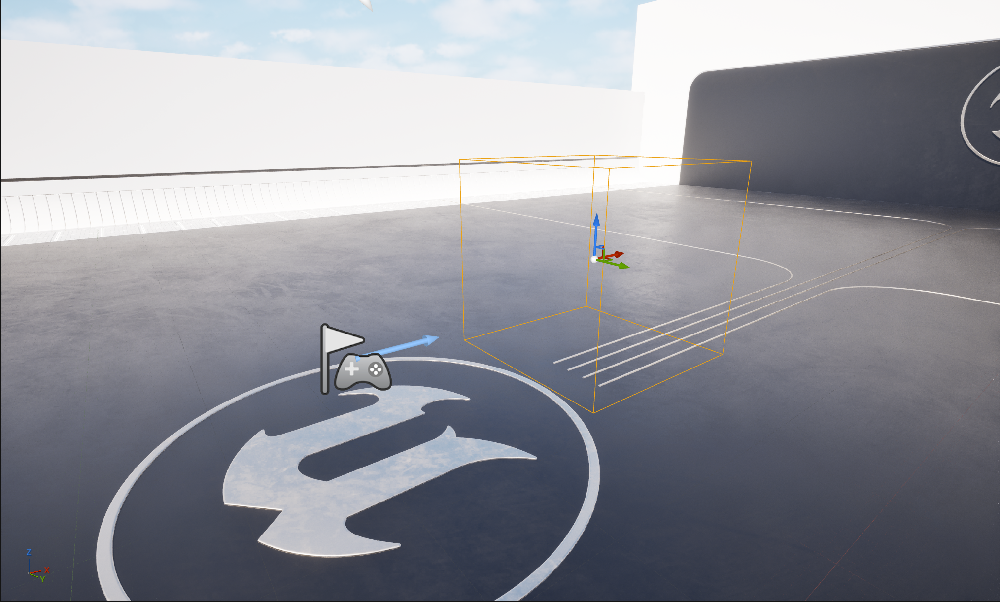
In the Details panel under Spawning, click the What to Spawn drop down and select BP_Pickup. Set Spawn Delay Range Low to 2 and set Spawn Delay Range High to 6 seconds. Drag-and-drop another SpawnVolume into the level. Press R to make it a longer rectangle. Click the What to Spawn drop down and select Battery_BP.

If you notice, this list includes only things that inherit from the base Pickup class. That is because we used the TSubclassOf template. We only have the Pickup, the BP_Pickup, the BatteryPickup, and Battery_BP. Let’s make the Battery_BP spawn more quickly so you can see what happens when we have a faster Spawn Rate. Click Play. At this point you can see the base pickup, which doesn’t have any physics, spawn in at different rotations. The batteries are spawning much more quickly. We were able to set 2 different types of pickups to our spawn volumes.

9 Extending the Character Class
If you let the game run for a while, you end up with a big bunch of batteries that are doing no good. We will work on some of the collection code. The collection code is going to have 2 parts. Some of the code is going to be on the Pickup and some code is going to be on the Character. The pickups will decide how they respond to being collected. The Character will call the collection functions.
First, let’s put our collected functions on our base pickup. Go to Pickup.h. Every pickup will respond to being collected, therefore all of the base code should go on the base pickup. It is going to be a public pickup function so that it can be called by our Character.
/** Function to call when the pickup is collected */
UFUNCTION(BlueprintNativeEvent)
void WasCollected();
virtual void WasCollected_Implementation();BlueprintNativeEvents have some behavior which is set up in code, and some behavior that can be set up in Blueprint. You don’t have to set up Blueprint behavior. If you just set up code behavior, then only the code behavior will be called. You can override the behavior in Blueprints and either call back to the code implementation, or not. We need to make the implementation declaration because this is a BlueprintNativeEvent. The declaration is going to be virtual so it can be overridden by any child classes.
The naming scheme is our previous function name, WasCollected_Implementation. The WasCollected_Implementation function is what you will override in any child code classes. However, you will only ever call it as WasCollected so it can call both the code implementations and the Blueprint implementations with one function call.
void APickup::WasCollected_Implementation()
{
// Log a debug message
FString PickupDebugString = GetName();
UE_LOG(LogClass, Log, TEXT("You have collected %s"), *PickupDebugString);
}For the base pickup, we are going to put together a debug string to say what you have collected. This helps with debugging. All pickups, including the boxes that stay in the sky, the batteries that rain down — if we created a power pickup later — will always print that you have collected them to the log.
Now, we will go to BatteryPickup.h and override WasCollected_Implementation with a little bit of extra behavior:
UCLASS()
class BATTERYCOLLECTOR_API ABatteryPickup : public APickup
{
GENERATED_BODY()
public:
ABatteryPickup();
/** Override the WasCollected function - use Implementation because it's a Blueprint Native Event */
void WasCollected_Implementation() override;
};Go to the BatteryPickup.cpp source file to override it:
void ABatteryPickup::WasCollected_Implementation()
{
// Use the base pickup behavior
Super::WasCollected_Implementation();
// Destroy the battery
Destroy();
}There are two things we want to do when a battery is collected. First, we want to use the base pickup behavior. To do that, we call the parent function using Super. Then, we want to destroy the battery. We didn’t put the destruction on the base pickup because there may be some pickups that only deactivate for a short time and then reactivate, like a power-up. Destruction is not universally applicable, so we only put it on the battery.
9.1 Adding the Collection Sphere
Go to BatteryCollectorCharacter.h. You can copy and paste the FollowCamera component as your template.
/** Collection sphere */
UPROPERTY(VisibleAnywhere, BlueprintReadOnly, Category = "Pickups",
meta = (AllowPrivateAccess = "true"))
USphereComponent* CollectionSphere;Scroll down to the FORCEINLINE accessor functions. We will make another accessor function.
/** Return CollectionSphere subobject **/
FORCEINLINE class USphereComponent* GetCollectionSphere() const { return CollectionSphere; }Then go to the constructor in BatteryCollectorCharacter.cpp. Scroll down to the bottom and add:
// Create the collection sphere
CollectionSphere = CreateDefaultSubobject<USphereComponent>(TEXT("CollectionSphere"));
CollectionSphere->SetupAttachment(RootComponent);
CollectionSphere->SetSphereRadius(200.f);If you wanted to make a box or a capsule around the Character, you can certainly do that too. We are using the sphere because it can extend a large volume around the Character. The CollectionSphere was not set as the Root Component because the Character already has a Root Component. Instead, attach it to the Root Component. The sphere radius is set using a function that is on the Sphere Component. We set the sphere radius to 200 to get a balanced feeling at the end.
In the next section, you will actually write the collection function.
10 Collecting Pickups
Now, we will create a function to collect all the pickups that we are currently overlapping with our Character. Go to the BatteryCollectorCharacter.h class header. This is going to be a protected function, since we only want to be able to call this function on our specific Character or any child classes.
/** Called when we press a key to collect any pickups inside the CollectionSphere */
UFUNCTION(BlueprintCallable, Category = "Pickups")
void CollectPickups();Make this function BlueprintCallable and put it in the Pickups category. This way, if you wanted to use CollectPickups in some other way in a Blueprint, then you could.
This function is going to be called when you press a key, as opposed to having the Character run over the pickups and automatically collect them. Save the header and go to the source file BatteryCollectorCharacter.cpp. We know we are going to have to use some of the Pickup classes, so include Pickup.h:
#include "Pickup.h"Scroll all the way down to the bottom:
void ABatteryCollectorCharacter::CollectPickups()
{
// Get all overlapping Actors and store them in an array
TArray<AActor*> CollectedActors;
CollectionSphere->GetOverlappingActors(CollectedActors);
// For each actor we collected
for (int32 iCollected = 0; iCollected < CollectedActors.Num(); ++iCollected)
{
// Cast the actor to APickup
APickup* const TestPickup = Cast<APickup>(CollectedActors[iCollected]);
// If the cast is successful and the pickup is valid and active
if (TestPickup && IsValid(TestPickup) && TestPickup->IsActive())
{
// Call the pickup's WasCollected function
TestPickup->WasCollected();
// Check to see if the pickup is also a battery
ABatteryPickup* const TestBattery = Cast<ABatteryPickup>(TestPickup);
if (TestBattery)
{
// increase the collected power
CollectedPower += TestBattery->GetPower();
}
// Deactivate the pickup
TestPickup->SetActive(false);
}
}
}First, get all overlapping Actors and store them in an array. Then, we are going to go through the array for each Actor we collected. We are going to cast the Actor to APickup. Basically, we are asking: did we overlap APickup? Or did we overlap the floor? If the cast is successful and the pickup is valid and active — if you remember the IsActive variable we wrote in the first section — we call the pickup’s WasCollected function, then deactivate the pickup. This is so you can’t spam Collection and get more benefits.
If you notice on TestPickup, we are calling WasCollected. We are not calling WasCollected_Implementation because that would just go to the code implementation. We want to capture any Blueprint script we might set up and any code that is defined.
10.1 Input Binding
Go back to Unreal Editor and go to the folder ThirdPerson/Input/Actions. Right click, select Input and then Input Action to create a new Input Action.
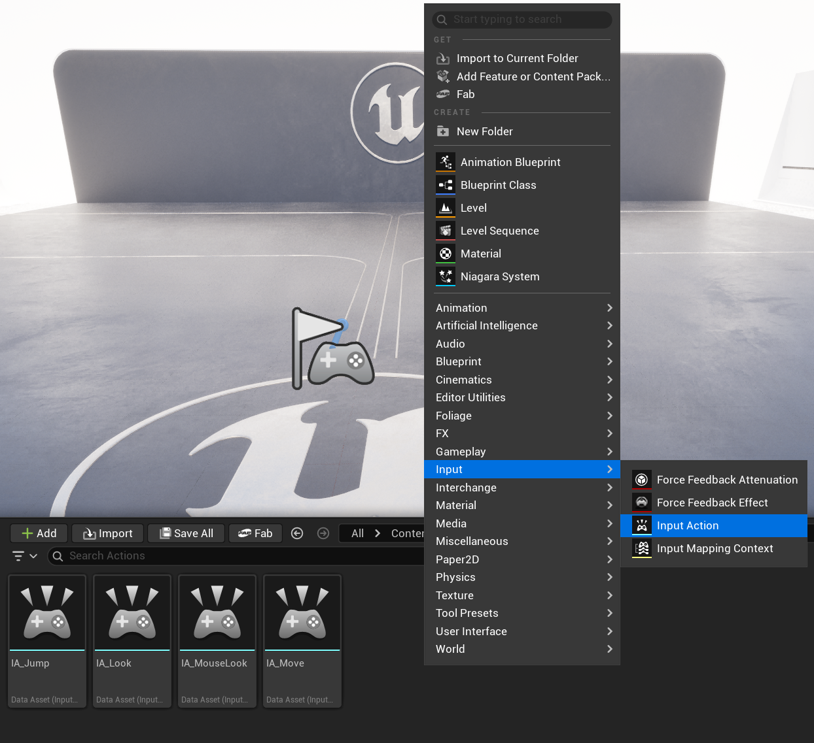
Name this Input Action IA_Collect.
Go back to the ThirdPerson folder and open IMC_Default.
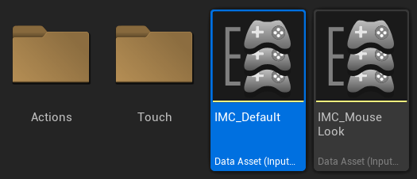
On the Mappings section, click on the plus sign to add a new Mapping.

Select IA_Collect as the new mapping.
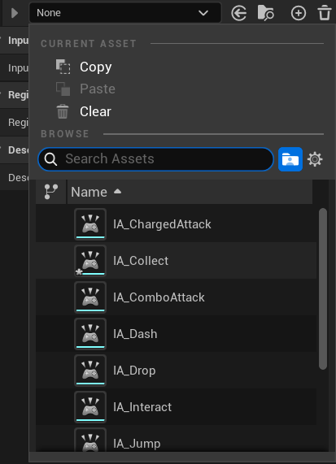
Set the C key for the Keyboard Mapping.

Now that we have the new Input Action setup and configured, go back to Visual Studio and open BatteryCollectorCharacter.h. Note that it already has declarations for the mapping context and the already setup input actions:
/** MappingContext */
UPROPERTY(EditAnywhere, BlueprintReadOnly, Category = Input, meta = (AllowPrivateAccess = "true"))
class UInputMappingContext* DefaultMappingContext;
/** Jump Input Action */
UPROPERTY(EditAnywhere, BlueprintReadOnly, Category = Input, meta = (AllowPrivateAccess = "true"))
class UInputAction* JumpAction;
/** Move Input Action */
UPROPERTY(EditAnywhere, BlueprintReadOnly, Category = Input, meta = (AllowPrivateAccess = "true"))
class UInputAction* MoveAction;
/** Look Input Action */
UPROPERTY(EditAnywhere, BlueprintReadOnly, Category = Input, meta = (AllowPrivateAccess = "true"))
class UInputAction* LookAction;Add a new input mapping for collecting the pickups:
/** Collect Input Action */
UPROPERTY(EditAnywhere, BlueprintReadOnly, Category = Input, meta = (AllowPrivateAccess = "true"))
class UInputAction* CollectAction;Now, open BatteryCollectorCharacter.cpp. In the SetupPlayerInputComponent function, add:
EnhancedInputComponent->BindAction(CollectAction, ETriggerEvent::Triggered,
this, &ABatteryCollectorCharacter::CollectPickups);When it is pressed, call a function inside this Character class. It knows to look for some action event called Collect. Whenever that is called from whichever key we set up in the editor, then call CollectPickups on our Character class. Save this, switch back to the editor and compile.
Next, open BP_ThirdPersonCharacter and, on the Input section set IA_Collect as the Collect Action.
Open the log so you can see the log messages and click Play. You can see the pickups being spawned in. If you come over to the batteries and press C, they disappear. We said the battery pickup behavior was to print to the log and destroy the batteries. Meanwhile, the other pickups are only going to print the log message. They are not being destroyed, but they are inactive.
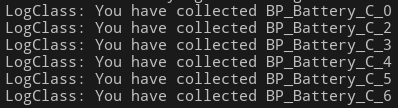
11 Adding Power to the Game
In the last section, we set up the Collection function. We set up the Collection function with a test log string, so we can show it is working. For our gameplay, we want the Character to increase its power using the batteries in the level. That means we have to create a power variable on both the Battery Pickup and the Character.
11.1 Battery Power Variable
Go to Battery header file BatteryPickup.h. We are going to have a protected variable with a public accessor function. This way you can only set the battery power if you are on the code class or on a Blueprint derived from that code class.
protected:
/** Set the amount of power the battery gives to the character */
UPROPERTY(EditAnywhere, BlueprintReadWrite, Category = "Power",
Meta = (BlueprintProtected = "true"))
float BatteryPower;This code uses a new piece of metadata: the meta for BlueprintProtected. We have made this variable protected in code, which means no other C++ classes can change BatteryPower unless they inherit from BatteryPickup. However, we need a separate flag to protect the variable in Blueprint so the only Blueprints that can change this variable are those that inherit from BatteryPickup.
Then we will make our accessor function so other classes, like our Character, can know what the battery power is:
/** Public way to access the battery's power level */
float GetPower();Go to the BatteryPickup.cpp source file:
ABatteryPickup::ABatteryPickup()
{
GetMesh()->SetSimulatePhysics(true);
// the base power level of the battery
BatteryPower = 150.f;
}
// report the power level of the battery
float ABatteryPickup::GetPower()
{
return BatteryPower;
}BatteryPower is set to 150. We will definitely tweak this value during our polish pass later, but 150 is a nice number to start with. Let’s compile and check it out on our battery. Press CTRL+ALT+F11. Once the Editor has finished compiling, double-click to open Battery_BP.

Under the Power category, we have Battery Power which is set to the default of 150. You can easily override it and make the Battery Power 200. Click Compile. Click Save.

11.2 Character Power Variables
Now that we have seen the power level work on our battery, let’s add it to the Character. Select BatteryCollectorCharacter.h in the Solution Explorer. Our Character is going to have 2 power variables: one for the initial power level, and another for the current power level. The InitialPower is going to be protected so that we can override it in a Blueprint or in a subclass. The CharacterPower or current power level is going to be private, so no other class or default can change the value without going through our code.
protected:
/** The starting power level of our character */
UPROPERTY(EditAnywhere, BlueprintReadWrite, Category = "Power",
Meta = (BlueprintProtected = "true"))
float InitialPower;
private:
/** Current power level of our character */
UPROPERTY(VisibleAnywhere, Category = "Power")
float CharacterPower;CharacterPower is not going to be EditAnywhere. It is going to be VisibleAnywhere so we can take a look at it to debug as we go. Now, let’s go into the constructor and set defaults. Go to the bottom of the constructor:
// set a base power level for the character
InitialPower = 2000.f;
CharacterPower = InitialPower;We set InitialPower to 2000. If you think about it the battery is about 150-200, so you have to collect a number of batteries. We are also going to have the power level drain, so you won’t pick up 10 batteries and double your power. Also in the constructor, we say when the Character is created, the CharacterPower level is set to the InitialPower level.
Now, we will create the public getters. We have the protected and private power variables, but we want other classes to at least be able to reach out to the Character and ask what those power levels are.
/** Accessor function for initial power */
UFUNCTION(BlueprintPure, Category = "Power")
float GetInitialPower();
/** Accessor function for current power */
UFUNCTION(BlueprintPure, Category = "Power")
float GetCurrentPower();These are both BlueprintPure functions, which means they are not going to have execution pins because they do not actually change anything. These functions are just returning the current value of the InitialPower and CharacterPower.
The function to update the character’s power is going to be a little bit more complicated. It is going to have a parameter. It is going to be a void function called UpdatePower. The PowerChange can be either positive or negative.
/**
* Function to update the character's power
* @param PowerChange This is the amount to change the power by, and it can be positive or negative.
*/
UFUNCTION(BlueprintCallable, Category = "Power")
void UpdatePower(float PowerChange);The reason this is BlueprintCallable and not BlueprintPure is it is actually having an effect on your Character’s power. You want to directly execute it, so you want it to have that execution pin. Go back to the BatteryCollectorCharacter.cpp source file:
// Reports starting power
float ABatteryCollectorCharacter::GetInitialPower()
{
return InitialPower;
}
// Reports current power
float ABatteryCollectorCharacter::GetCurrentPower()
{
return CharacterPower;
}
// Called whenever power is increased or decreased
void ABatteryCollectorCharacter::UpdatePower(float PowerChange)
{
CharacterPower = CharacterPower + PowerChange;
}Press CTRL+ALT+F11. After the compile is complete, open BP_ThirdPersonCharacter and search “power” in the Details panel. We can see both Initial Power and Character Power.
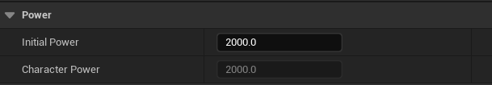
We are not able to change Character Power, but we can change Initial Power. In the next section, we will start actually using the UpdatePower function.
12 Powering Up the Character
In the last section, we wrote the UpdatePower function which allows the character’s power level to be updated. In this section, we will use UpdatePower to add the power of each collected battery to our character’s power level.
If you remember, we wrote the CollectPickups function on our BatteryCollectorCharacter. Since we are already working on collecting the pickups, this is where we should process pickups to find out if they are batteries. If they are batteries, get their power level and add it to our character’s power level. The full CollectPickups function already reflects this — note the cast to ABatteryPickup and the CollectedPower accumulation (refer to the code in the Collecting Pickups section above).
Switch back to the editor. Go to the Level Editor and compile. Click Play. Then, before clicking in the Editor Window, select BP_ThirdPersonCharacter in the Outliner. Power is in the Details panel. You can see Initial Power is 2000. The current Character Power is 2000. When you start collecting batteries, the Character Power increases. The batteries are being collected, so your total power is increasing.

In the next section, you will work with the GameMode so we can start draining the character’s power over time.
13 Powering Down the Character
In the last section, you used the UpdatePower function to increase the character’s power as we collected batteries. Now, you are going to call the UpdatePower function from the GameMode to decrease the character’s power over time.
Go back to Visual Studio. Select the BatteryCollectorGameMode.h header file. We are going to create a decay rate. This is the rate by which our character’s power will decrease over time. We will make this protected so we can only change it from the GameMode or GameMode inherited classes.
UCLASS(minimalapi)
class ABatteryCollectorGameMode : public AGameModeBase
{
GENERATED_BODY()
public:
ABatteryCollectorGameMode();
protected:
/** The rate at which the character loses power */
UPROPERTY(EditDefaultsOnly, BlueprintReadWrite, Category = "Power",
Meta = (BlueprintProtected = true))
float DecayRate;
};We are doing this in the GameMode rather than the Character or another class because the GameMode sets the rules of the game. One of the rules is how fast the character loses power. EditDefaultsOnly is a little different than EditAnywhere, which you have been using so far. The EditDefaultsOnly keyword means that you can’t change a property on every instance of the class, just on the base class itself. We also made it BlueprintReadWrite so we could increase or decrease the decay rates systematically in our Blueprint. Now, set a starting value for the DecayRate in the constructor:
// base decay rate
DecayRate = 0.01f;We will start by setting this to something slow so we can test it out. This is one of those tweakable values we have exposed so gameplay designers could easily manipulate it within the editor.
Now, we are going to decrease the character’s power on Tick. We are doing this on Tick so we can incorporate delta time and avoid having the battery life decay depend on frame rate. Go to BatteryCollectorGameMode.h:
virtual void Tick(float DeltaTime) override;Go to BatteryCollectorGameMode.cpp to start implementing the function. We need to include Kismet/GameplayStatics.h:
#include <Kismet/GameplayStatics.h>void ABatteryCollectorGameMode::Tick(float DeltaTime)
{
Super::Tick(DeltaTime);
// Check that we are using the battery collector character
ABatteryCollectorCharacter* MyCharacter = Cast<ABatteryCollectorCharacter>(
UGameplayStatics::GetPlayerPawn(this, 0));
if (MyCharacter)
{
// if the character's power is positive
if (MyCharacter->GetCurrentPower() > 0)
{
// decrease the character's power using the decay rate
MyCharacter->UpdatePower(-DeltaTime * DecayRate * (MyCharacter->GetInitialPower()));
}
}
}We are taking Delta Time into account in case frame rate changes our DecayRate. In order for the Game Mode to Tick, you have to add the following code inside its constructor:
PrimaryActorTick.bCanEverTick = true;At this point, you can compile. Let’s see how this looks on the character’s power level. Go to the editor and click Compile. After finished compiling, click Play. Scroll down in the World Outliner and select ThirdPersonCharacter. You can see the Character Power is automatically decreasing just a little bit on every frame. If you collect batteries, the Character Power will increase by the amount of power provided by the batteries. Now, you have both forces on the character’s power. In the next section, we are going to set up some visual effects.
14 Change Character Speed and Material
In the past few sections, you have been able to check the character’s power level by looking in the Details panel. To make the change easier to see and to give some gameplay feel, we are going to do some visual effects and change the character’s speed as his power changes. We need to go to the Character class in the code. We are going to create some properties for the character’s speed dependence on his power level. These properties are going to be protected.
/** Multiplier for character speed */
UPROPERTY(EditAnywhere, BlueprintReadWrite, Category = "Power",
Meta = (BlueprintProtected = "true"))
float SpeedFactor;
/** Speed when power level = 0 */
UPROPERTY(EditAnywhere, BlueprintReadWrite, Category = "Power",
Meta = (BlueprintProtected = "true"))
float BaseSpeed;All of these have the meta keyword for BlueprintProtected. This is so our GameMode Blueprint can’t reach in and change the values for InitialPower, SpeedFactor, or BaseSpeed. Now that you have the properties, set baseline values in the constructor, right underneath setting up the InitialPower:
// set the dependence of the speed on the power level
SpeedFactor = 0.75f;
BaseSpeed = 10.f;Now that those values are set, we can start manipulating the character’s speed based on CharacterPower. We are going to do that in the UpdatePower function:
// Called whenever power is increased or decreased
void ABatteryCollectorCharacter::UpdatePower(float PowerChange)
{
// change power
CharacterPower = CharacterPower + PowerChange;
// change speed based on power
GetCharacterMovement()->MaxWalkSpeed = BaseSpeed + SpeedFactor * CharacterPower;
// call visual effect
PowerChangeEffect();
}By including SpeedChange, our speed will also change every time the power is increased or decreased. The CharacterMovementComponent is included on all Characters. Our BatteryCollectorCharacter inherits from the Character base class, so it has the CharacterMovementComponent which allows it to run, jump, and do all the bipedal movement that is already set up. You want to change the MaxWalkSpeed variable to BaseSpeed because BaseSpeed is what happens when the power level is 0. It is important to have them in this order — first change the power, then change the speed based on power — otherwise we are setting the character movement to be based on previous speed.
We are also going to change the Material in Blueprints because it is a little bit more straightforward that way. However, we want to know it gets called every time UpdatePower is called. We are going to do that with a Blueprint-implementable Event:
UFUNCTION(BlueprintImplementableEvent, Category = "Power")
void PowerChangeEffect();The BlueprintImplementableEvent keyword means we don’t have to define the function in code at all. We call the function and let the Blueprints worry about the behavior that is going to be attached to that event. Everything else is left up to the person creating the Blueprint.
Go to Unreal Engine and Compile. Double-click to open BP_ThirdPersonCharacter. You can see the Skeletal Mesh Asset already has a Material on it at Element 0. Double-click the icon to open the Material Editor. The Material has a Paint Tint parameter already on it.
Construction Script setup:
- Drag-and-drop Mesh into the graph → drag off Mesh → Get Materials
- Drag off the Return Value → Get (index 0)
- Drag off Mesh → Create Dynamic Material Instance → connect index 0 to Source Material
- Right-click on the Return Value → Promote to Variable → name it “PowerMaterial”

Event Graph setup:
- Right-click → type “power” → select Event Power Change Effect

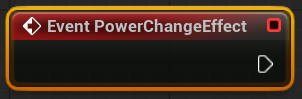
- Drag-and-drop PowerMaterial into the graph → drag off → Set Vector Parameter Value
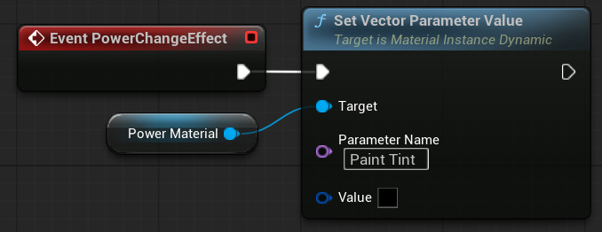
- Parameter Name: “Paint Tint”
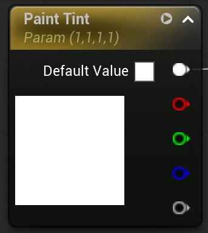
- Plug
Event Power Change EffectintoSet Vector Parameter Value - Right-click → Get Current Power and Get Initial Power
- Divide:
Get Current Power / Get Initial Power

- Clamp (float) with Min
0and Max1
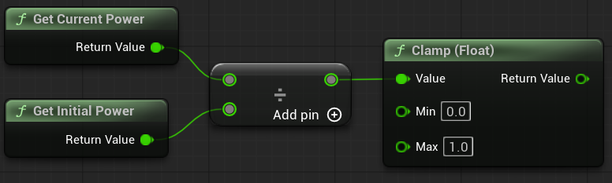
- Lerp (LinearColor): plug Clamp into Alpha, Return Value into Set Vector Parameter Value
- Color A: teal (low power)
- Color B: orange (high power)


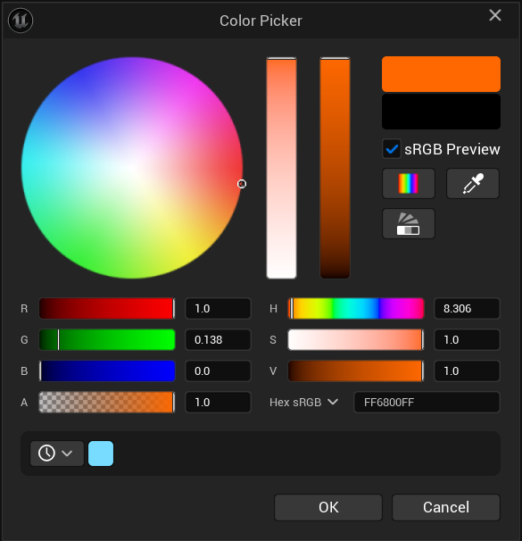

Click Compile and click Save. Let’s test this. Go to CollectionLevel. Click Play. Your character is light yellow color because you have a fairly high power level. If you wait for a moment, the power level will decrease and the color should start turning more grey. It should also be moving a little bit slower. If you collect more batteries, it will go back to yellow. In the next section, we will do some more visual effects with batteries and some lightning.
15 Creating the Particle System
In the previous section, we set up some visual effects like the Character’s speed and changing his color. In this section, we are going to work on the batteries to make them shoot electricity between them and the Character when they are collected.
The first step will consist in creating our particle system using Niagara. Then, we will setup our battery blueprint to spawn the electric arc between its static mesh and the player when it gets collected.
15.1 Material Setup
On the Content Drawer create a new folder named Materials. Then, inside the Materials folder, right-click on the Content Drawer and select Material.

Name this Material M_ElectricArc.
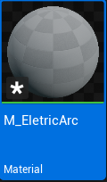
Set the Shading Model to Unlit.

Drag off from the Emissive Color pin and type Particle Color.

Select one of the Particle Color options.
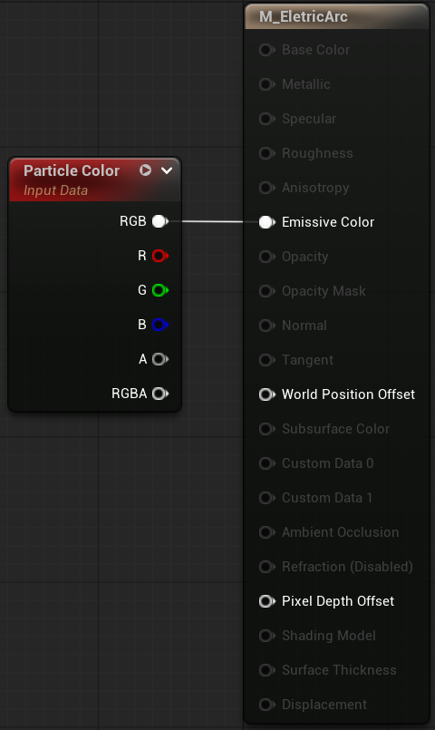
Save the Material.
15.2 Niagara System
On the Content Drawer create a folder named FX. Inside that folder, right-click and select FX → Niagara System.
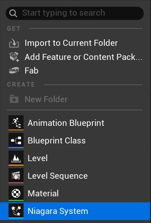
Select Select an emitter or system as a base and click Next. Select Static Beam — the static beam will allow us to modify the position of each particle constituting the beam during the particle spawn. Press the Create button.

Name this Niagara System P_ElectricArcs.

Open the P_ElectricArcs particle system. On the Parameters panel, expand the Emitter Attributes and create a new float attribute. Name this LifeTime.
This will set the lifetime of each particle within the particle system. Drag this attribute to the Emitter Update section, above the Emitter State. This will create a new item named Set: EMITTER LifeTime. Set the parameter type to Random Range Float. Set the Minimum and Maximum values to 0.1 and 0.15.
Select Emitter State on the Static Beam node and drag the LifeTime parameter onto Loop Duration. Then, check Recalculate Duration each Loop, so that at each repetition, a new lifetime value should be used.
Select Initialize Particle on the Particle Spawn section. Drag the LifeTime attribute into the LifeTime point attribute. Enable the Color point attribute and set the color to a blueish color. Then, set v to 50.
Delete the Color on the Particle Update section. This way, the spawned particles will not have their colors changing. Finally, select Ribbon Renderer on the Render section and set the Material to M_ElectricArc and press the Save button.
Select Beam Emitter Setup. Notice that you have a Beam End attribute. Let’s make this attribute user exposed so we can set this value through Blueprints. To do so, create a User Exposed attribute of the type Vector and name it Beam End. Drag this attribute into the Beam End. Check Absolute Beam End, so you can use world positions.
On the Spawn Burst Instantaneous, set the Spawn Count to 25. On the Beam Width, change its type to Random Range Float and set its Minimum and Maximum values to 1 and 5.
Click Save. Notice that you cannot see the beam because the Beam End is not being set. On the P_ElectricArcs node, select User Parameters. Then, on the left panel set X = 200, and Z = 100. Now, you can see the beam.
Click the plus sign on the Particle Spawn section and select Shape Location. Set the Sphere Radius to 10. Select the Ribbon Renderer and set the Curve Tension to 0.8. Press Save.
16 Adding Particles to the Pickup
If you remember when we first created the battery pickups, we created a Blueprint Native Event called WasCollected. Since this is a Blueprint Native Event, we can set up some behavior in code, like destroying the battery. Then, we are going to set up some behavior which can be called in Blueprints.
Go to the editor. Select the Blueprints folder in the Content Browser. Double-click to open Battery_BP. Click Open Full Blueprint Editor. Right-click in the graph, type “Was Collected” and select the Was Collected Event in the context menu.
We are going to spawn an emitter based on this. Right-click in the graph, type “spawn emitter” and select Spawn System Attached.
Connect Event Was Collected to Spawn System Attached. When WasCollected is called in our Character’s collection function, it will look for this Blueprint event first. Then, it will fire the event. When we add a call to the parent, it will reach back and call any code we have set up. Click the Emitter Template drop down menu and select P_ElectricArcs. We are going to Attach to Component PickupMesh. In the Components tab, drag-and-drop PickupMesh on top of the Attach to Component pin. This will automatically connect the wires.
We need one end of the electricity on the Character, so let’s get our Character. Right-click → type “get player” → select “Get Player Character”. Drag off the Return Value → type and select “Get Mesh”.
We need to get the Skeletal Mesh from Get Player Character. We are going to get a socket so the electricity will connect to a particular bone on the Skeletal Mesh’s skeleton. Drag off Mesh → type and select “Get Socket Location”.
To find the right socket, open BP_ThirdPersonCharacter. Select Mesh from the Components tab. In the Details panel, double-click to open the Skeletal Mesh. Click on the Skeleton editing mode in the top right. On the left side, there is a list of all the sockets. We will use a socket in the chest. Select spine_02. Right-click spine_02 and select Copy Selected Bone Names. Right-click in Socket Name and select Paste.
Drag off the Spawn Emitter Attached Return Value → type and select “Set Vector Parameter”. On the Parameter Name type “User.BeamEnd”. Connect the Get Socket Location Return Value into Param. It will always target our character’s chest.
Once that is done, we want the Beam Target Point to update frequently. If the Character is running around, the electricity will follow the character. We need a Sequence node. Drag off the Set Vector Parameter output → type and select “Sequence”. A Sequence node is nice because you could wire everything up together in one long row. First, we are going to add a Delay node. Drag off Then 0 → type and select “Delay”. We are going to use a Delay and not a Retriggerable Delay because if Beam Target Point gets called again, we don’t want it to restart the Delay. Set the Duration to 1 second. When that is done, we are going to call the parent which will destroy the battery. Right-click Event Was Collected and select “Add call to parent function”. Drag the node over to the right. Connect the Delay Completed output to Parent Was Collected.
Then, we want another Delay node. Copy and paste the Delay node. Set the Duration to 0.1 seconds. After we execute a delay and call the parent, we will loop back through and keep updating our Beam Target Point. Connect Then 1 to the new Delay node. Connect the Delay Completed output to Set Beam Target Point.
The execution of the graph will be: an emitter is spawned and it will set the Target Point as our character’s spine. It will delay for 1 second, and then call the parent function and destroy the battery. Then, it will keep delaying, and reset the Beam Target Point to follow the character around. Click Compile and click Save.
Select the CollectionLevel tab. Click Play. The batteries are spawning in. If you collect the batteries, they are spawning electricity that will follow the character around. You will tweak the size of the lightning in the polish section of the assignment.
17 Enabling UMG
In the last section, we set up our batteries to shoot electricity between themselves and the character when they are picked up. We are going to add another visual element now. We are going to work towards a HUD that will display our character’s current power, as well as the power needed to win the game. This is building towards a win state, a lose state, and the general playing state in the game.
Open Visual Studio and go to the BatteryCollectorGameMode.h. You are going to set up a power to win variable. If we have a bar to display how much power we need, then we need to know the maximum of the bar to win the game. This is going to be a protected variable.
/** The power needed to win the game */
UPROPERTY(EditDefaultsOnly, BlueprintReadWrite, Category = "Power",
Meta = (BlueprintProtected = true))
float PowerToWin;Again, this is on the GameMode because that is where the rules of the game should go, including how to win the game. We are going to make a public function to return what the PowerToWin is because this is needed by the HUD.
/** Returns the power needed to win - needed for the HUD */
UFUNCTION(BlueprintPure, Category = "Power")
float GetPowerToWin() const;It is a constant because it is not going to change anything about the power, it is just going to return the value. It is going to be a UFUNCTION() so we can call it in our Blueprint. Now, implement GetPowerToWin() on the source file:
float ABatteryCollectorGameMode::GetPowerToWin() const
{
return PowerToWin;
}We are going to set PowerToWin in BeginPlay(). We can’t set PowerToWin in the constructor because our GameMode may not necessarily be constructed after our Character is constructed. We need to base the PowerToWin on the Character’s InitialPower. We are going to do it in BeginPlay() because that means everything will already be spawned and registered.
virtual void BeginPlay() override;void ABatteryCollectorGameMode::BeginPlay()
{
Super::BeginPlay();
// set score to beat
ABatteryCollectorCharacter* MyCharacter = Cast<ABatteryCollectorCharacter>(
UGameplayStatics::GetPlayerPawn(this, 0));
if (MyCharacter)
{
PowerToWin = (MyCharacter->GetInitialPower()) * 1.25f;
}
}We will call the parent BeginPlay() in case anything happens on the GameMode that we need to make sure still gets called. To test, we are going to multiply and say you need at least 1.25 times your Initial Power to win the game.
17.1 UMG Dependencies
Before we start making the HUD, we need to change some of the dependencies in our build file. Go to the Solution Explorer and select BatteryCollector.Build.cs. Add UMG to the public dependencies, and add Slate modules as private dependencies:
PublicDependencyModuleNames.AddRange(new string[] {
"Core", "CoreUObject", "Engine", "InputCore",
"HeadMountedDisplay", "UMG"
});
PrivateDependencyModuleNames.AddRange(new string[] { "Slate", "SlateCore" });UMG requires some of these Slate modules.
17.2 HUD Widget Variables
Go to BatteryCollectorGameMode.h:
/** The Widget class to use for our HUD screen */
UPROPERTY(EditDefaultsOnly, BlueprintReadWrite, Category = "Power",
Meta = (BlueprintProtected = true))
TSubclassOf<class UUserWidget> HUDWidgetClass;
/** The instance of the HUD */
UPROPERTY()
class UUserWidget* CurrentWidget;We use a forward declaration because we don’t necessarily need to work with the widget yet. The TSubclassOf is similar to the UCLASS(), but it is restricted to only things which inherit from UUserWidget. CurrentWidget is marked as a regular UPROPERTY() so it is handled properly with garbage collection.
Now, in BeginPlay(), after we have set PowerToWin, set the widget to use:
if (HUDWidgetClass != nullptr)
{
CurrentWidget = CreateWidget<UUserWidget>(GetWorld(), HUDWidgetClass);
if (CurrentWidget != nullptr)
{
CurrentWidget->AddToViewport();
}
}You have to include UserWidget.h at the top:
#include <Blueprint/UserWidget.h>Compile to check that everything is OK. We will go into UMG UI Designer in the next section and lay out our UI with our power bar.
18 Creating the HUD Blueprint
On Unreal Editor, inside Content Drawer, go to the Blueprints folder. Right-click in the Content Drawer, go to User Interface, and select Widget Blueprint. Select User Widget. Call this Blueprint “BatteryHUD”. Double-click to open BatteryHUD.
We need a progress bar. In the Palette, drag-and-drop a Canvas Panel into the graph. Then, drag a Progress Bar into the canvas panel. Click the Anchors drop down menu and select the bottom center. Set Position X to 0. Set Position Y to -100. Set Size X to 600. Set Alignment X to 0.5. This means half of the bar is on the left and half of the bar is on the right.
To set the Percent, we are going to create a binding. Under Progress, go to Percent and click the Bind drop down. Select +Create Binding.
We want the progress bar to be some percentage of the Player Character’s Current Power over the GameMode’s PowerToWin. Right-click → type and select “Get Player Character”. Drag off the Return Value → type “battery” → select Cast To BatteryCollectorCharacter. Right-click and select Convert to pure cast.
Right-click → type and select “Get GameMode”. Drag off Return Value → type “battery” → select Cast To BatteryCollectorGameMode. Right-click and select Convert to pure cast.
Drag off As Battery Collector Character → type “get power” → select Get Current Power. Drag off As Battery Collector GameMode → type “get power” → select Get Power To Win. Divide: drag off Get Current Power Return Value → type / → select float / float. Plug in Initial Power and Current Power. Plug the result into the Return Value of the Return Node.
Click Compile and click Save.
We need to create a GameMode Blueprint. Go to CollectionLevel. Right-click in the Content Browser and select Blueprint Class. Click the drop down → type “battery” → select BatteryCollectorGameMode. Name this “GameMode_BP”. Double-click to open it. Click the HUDWidget Class drop down and select BatteryHUD. Click Compile and click Save.
Now, we have to tell CollectionLevel to use the GameMode_BP as our default GameMode. In the main toolbar, click Edit and select Project Settings. Go to Maps & Modes. Click the Default GameMode drop down menu and select GameMode_BP.
Click Play. We have our progress bar, which you can see ticking down because the GameMode is draining our power. If you collect some batteries, it will fill up the progress bar. In the next section, we are going to start working on the game over and game won states.
19 Setting Up the Play States
Previously, we set up a power bar so we can see how much power our Character needs to win. Now, we need to set up some code to show what winning and losing really means. We are going to make an enum to store the current playing state: playing, game over, or the game has been won. Then, we can start using this state to determine other Blueprint and C++ behavior. Let’s go back to our GameMode code. In the BatteryCollectorGameMode.h header file, we are going to make a custom enum to store the state of your game. The enum will be above UCLASS() in our header file.
// enum to store the current state of gameplay
UENUM(BlueprintType)
enum class EBatteryPlayState : uint8
{
EPlaying,
EGameOver,
EWon,
EUnknown
};We use a macro similar to the UCLASS(), UPROPERTY() and UFUNCTION() macros we used previously. This macro is of the Blueprint type which will allow us to use it later in our HUD_BP. Our 4 states will be EPlaying, EGameOver, EWon, and EUnknown. Use the prefix E for the naming scheme. EUnknown is a default state to handle if things aren’t set.
After we have defined the EBatteryPlayState, we need a variable to store it. We are going to make the variable private because we don’t want to be able to change it in any other class. We only want to be able to change it within the code of our GameMode.
private:
/** Keeps track of the current playing state */
EBatteryPlayState CurrentState;This variable is private, but we want to still read it from our HUD or communicate with the GameMode to set the variable, so we can make public getter and setter functions.
/** Returns the current playing state */
UFUNCTION(BlueprintPure, Category = "Power")
EBatteryPlayState GetCurrentState() const;
/** Sets a new playing state */
void SetCurrentState(EBatteryPlayState NewState);You are going to set the state in code only. If you want to change the GameState from a Blueprint, such as in a main menu, you can add a UFUNCTION() macro here. Now, make the getter and setter function bodies in BatteryCollectorGameMode.cpp:
EBatteryPlayState ABatteryCollectorGameMode::GetCurrentState() const
{
return CurrentState;
}
void ABatteryCollectorGameMode::SetCurrentState(EBatteryPlayState NewState)
{
CurrentState = NewState;
}You will do more handling of the new play state in the future. For right now, if this function is called, it just changes the current state to the new state that has been requested. When should the GameMode switch to EPlaying as a state? On Begin Play. We should make sure to switch the GameState before we do anything else.
void ABatteryCollectorGameMode::BeginPlay()
{
Super::BeginPlay();
SetCurrentState(EBatteryPlayState::EPlaying);
// set score to beat
ABatteryCollectorCharacter* MyCharacter = Cast<ABatteryCollectorCharacter>(
UGameplayStatics::GetPlayerPawn(this, 0));
if (MyCharacter)
{
PowerToWin = (MyCharacter->GetInitialPower()) * 1.25f;
}
if (HUDWidgetClass != nullptr)
{
CurrentWidget = CreateWidget<UUserWidget>(GetWorld(), HUDWidgetClass);
if (CurrentWidget != nullptr)
{
CurrentWidget->AddToViewport();
}
}
}We want to add whether or not we are in the EPlaying state in our Tick() function, where we are checking whether or not the CurrentPower level is positive. We don’t want to decrease CurrentPower if we have already won or lost the game. Let’s add some more conditional statements.
void ABatteryCollectorGameMode::Tick(float DeltaTime)
{
Super::Tick(DeltaTime);
ABatteryCollectorCharacter* MyCharacter = Cast<ABatteryCollectorCharacter>(
UGameplayStatics::GetPlayerPawn(this, 0));
if (MyCharacter)
{
// If our power is greater than needed to win, set the game's state to Won
if (MyCharacter->GetCurrentPower() > PowerToWin)
{
SetCurrentState(EBatteryPlayState::EWon);
}
// if the character's power is positive
else if (MyCharacter->GetCurrentPower() > 0)
{
// decrease the character's power using the decay rate
MyCharacter->UpdatePower(-DeltaTime * DecayRate * (MyCharacter->GetInitialPower()));
}
else
{
SetCurrentState(EBatteryPlayState::EGameOver);
}
}
}We have 3 states. The game is EWon when CurrentPower is greater than the PowerToWin. If CurrentPower is positive, but not greater than the PowerToWin, we can start decreasing and decaying CurrentPower. If the power is negative, then we will set the state to EGameOver. Let’s find a way to display the states within our HUD.
Go back to the editor and click Compile. In the Content Browser, go to the Blueprints folder and double-click to open BatteryHUD. Select the Designer tab. Put a Text box at the top. In the Palette, drag-and-drop Text into the graph. Click the Anchors drop down menu and select the top of the screen. Set Position X to 0. Set Position Y to 50. Check Size To Content. Under Alignment, Set X to 0.5 so that it is centered on the screen.
Click the Bind drop down menu and select +Create Binding. Right-click → type and select “Get Game Mode”. Drag off Return Value → type “cast” → select Cast To BatteryCollectorGameMode. Connect Get Text 0 to Cast To BatteryCollectorGameMode. Plug the execution output into the Return Node. Drag off As Battery Collector Game Mode → type “get state” → select Get Current State. Drag off the Return Value enum pin → type “select” → under Struct, click the Select node. Connect the Return Value to the Return Value on the Return Node.
For each state, enter the following text:
| State | Text |
|---|---|
| EPlaying | Press C to collect batteries |
| EGameOver | Game Over! |
| EWon | You Win! |
Click Compile and click Save. Go to CollectionLevel. Click Play. You can see at the top it says “Press C to collect batteries”. You can see as you collect all the batteries, when you fill up the bar completely, it says “You Win!” If you restart the level, and drain the power it says “Game Over!” when you lose.
20 Toggling the Spawn Volumes
Previously, you set up text to display on the screen when the game was playing, when the player won, or when the game is over. There are a few other things we want to have happen for our different playing states. All states have the HUD text, which is all set up and ready for us. We want to have some things happen with the spawn volume:
- Playing: spawn volumes are spawning pickups
- Won: spawn volumes stop spawning pickups
- Game Over: spawn volumes stop spawning pickups, the character collapses, player can no longer input
Throughout this section, we are going to start working with the Spawn Volume class so we can have it work with our new play states. This will include adding a new function to the SpawnVolume class and registering all the spawn volumes in the level with the GameMode. First, go to SpawnVolume.h header file. We are going to create a new function to toggle spawning on and off.
/** This function toggles whether or not the spawn volume spawns pickups */
UFUNCTION(BlueprintCallable, Category = "Spawning")
void SetSpawningActive(bool bShouldSpawn);This will be a public function because we want other classes, like the GameMode, to be able to reach in and access this function. It takes a Boolean for whether or not the spawning volumes should spawn. Make this a BlueprintCallable function. This way, at some point in your Blueprint, if you wanted to call whether or not the spawn volume should spawn, you can do that. Go to the SpawnVolume.cpp source file. Put the function body above our SpawnPickup():
void ASpawnVolume::SetSpawningActive(bool bShouldSpawn)
{
if (bShouldSpawn)
{
// Set the timer on Spawn Pickup
SpawnDelay = FMath::FRandRange(SpawnDelayRangeLow, SpawnDelayRangeHigh);
GetWorldTimerManager().SetTimer(SpawnTimer, this,
&ASpawnVolume::SpawnPickup, SpawnDelay, false);
}
else
{
// Clear the timer on Spawn Pickup
GetWorldTimerManager().ClearTimer(SpawnTimer);
}
}If you remember from earlier, you set up a timer in BeginPlay() to determine whether or not our SpawnPickup function should be called. Use that same code in SetSpawningActive. This will toggle based on the Boolean bShouldSpawn. Otherwise if bShouldSpawn is false, clear the timer on Spawn Pickup. This means the Spawn Pickup function would no longer be called on a regular interval.
Cut and remove these lines from BeginPlay() because we only want the spawn volume to start spawning after the SetSpawningActive function has been called. Completely remove this functionality from BeginPlay().
// Called when the game starts or when spawned
void ASpawnVolume::BeginPlay()
{
Super::BeginPlay();
}We are no longer setting the initial timer on BeginPlay because we don’t want the spawn volume to start spawning until we call SetSpawningActive. We are only going to call SetSpawningActive from the GameMode. Open the editor and click Compile. Then, play the game. You will notice your spawn volumes are not spawning your regular pickup, nor the battery pickup because you never called the SetSpawningActive(true) function.
20.1 Registering Spawn Volumes in the GameMode
We are going to register all the spawn volumes in the level. You could place 3 or 4 spawn volumes, and they would spawn pickups as long as you set their WhatToSpawn variable. We want all of the spawn volumes to be tracked by the GameMode so they can be turned on and off during gameplay. Open the BatteryCollectorGameMode.h header file. We are going to store all of the spawn volumes in an array. Let’s make a private TArray. We are really only handling the array on the code side.
TArray<class ASpawnVolume*> SpawnVolumeActors;Now that we have SpawnVolumeActors, go to the BatteryCollectorGameMode.cpp source file. We can now collect all of those Actors in BeginPlay. We need to include the spawn volumes because we need to interact with them directly and start casting.
#include "SpawnVolume.h"Go back to BeginPlay and start writing the code to find all the spawn volume Actors. We are going to use another Gameplay Statics function and another array. Use the UGameplayStatics function GetAllActorsOfClass. This function will go through your entire level. Supply this with the type of class you would like to look for. StaticClass() is the argument which the GetAllActorsOfClass function takes.
void ABatteryCollectorGameMode::BeginPlay()
{
Super::BeginPlay();
// find all spawn volume Actors
TArray<AActor*> FoundActors;
UGameplayStatics::GetAllActorsOfClass(GetWorld(), ASpawnVolume::StaticClass(), FoundActors);
for (auto Actor : FoundActors)
{
ASpawnVolume* SpawnVolumeActor = Cast<ASpawnVolume>(Actor);
if (SpawnVolumeActor)
{
SpawnVolumeActors.AddUnique(SpawnVolumeActor);
}
}
SetCurrentState(EBatteryPlayState::EPlaying);
// set score to beat
ABatteryCollectorCharacter* MyCharacter = Cast<ABatteryCollectorCharacter>(
UGameplayStatics::GetPlayerPawn(this, 0));
if (MyCharacter)
{
PowerToWin = (MyCharacter->GetInitialPower()) * 1.25f;
}
if (HUDWidgetClass != nullptr)
{
CurrentWidget = CreateWidget<UUserWidget>(GetWorld(), HUDWidgetClass);
if (CurrentWidget != nullptr)
{
CurrentWidget->AddToViewport();
}
}
}We have set up this array of all Actors because the GetAllActorsOfClass returns the base Actor type. Then, we are going to work through and cast them. As we go through all of the Actors in FoundActors, we are going to try and cast them to spawn volumes. If they are a spawn volume, then we are going to store them in that array. This is the part which meant we had to include SpawnVolume.h in this BatteryCollectorGameMode.cpp file. We use AddUnique so we don’t end up with any duplicated spawn volume Actors. Now as soon as the game begins, we are going to find all spawn volume Actors. We will cast the Actors in the array, and if it is a spawn volume then store it in the SpawnVolumeActor array.
When we set the current state to EPlaying, we will handle our new EPlaying state. We need to have the SpawnVolumeActors array already populated and ready to talk to. Once we set the current state to EPlaying, everything will be stored in this array to work with.
21 Handling New Play States
We have a few things we want the GameMode to handle while you are playing versus when you have won or lost the game. You have set up all states to have the HUD text. We want the spawn volumes to spawn while you are playing, we also want the spawn volumes to stop spawning when you have won and the spawn volumes to stop spawning when the game is over. At that point, we will have the character ragdoll and we will disable player input.
Previously, you set up the code for the spawn volume to toggle whether it would spawn. You registered all the spawn volumes in the level with our GameMode. Now we can start working on our state handler. The state handler will be on our GameMode. The state handler will be a private function because we will only call it from within GameMode code.
private:
/** Handle any function calls that rely upon changing the playing state of our game */
void HandleNewState(EBatteryPlayState NewState);The body of this function is going to be a simple switch statement. This is going to switch on the value of NewState. We have our different case statements which are all based on our 4 states of the EBatteryPlayState. If we have won the game, we want the spawn volumes to be inactive. If you have lost the game, we will still make the spawn volumes inactive and have a little more impact such as block player input and ragdoll the character.
void ABatteryCollectorGameMode::HandleNewState(EBatteryPlayState NewState)
{
switch (NewState)
{
// If the game is playing
case EBatteryPlayState::EPlaying:
{
// spawn volumes active
for (ASpawnVolume* Volume : SpawnVolumeActors)
{
Volume->SetSpawningActive(true);
}
}
break;
// If we've won the game
case EBatteryPlayState::EWon:
{
// spawn volumes inactive
for (ASpawnVolume* Volume : SpawnVolumeActors)
{
Volume->SetSpawningActive(false);
}
}
break;
// If we've lost the game
case EBatteryPlayState::EGameOver:
{
// spawn volumes inactive
for (ASpawnVolume* Volume : SpawnVolumeActors)
{
Volume->SetSpawningActive(false);
}
// block player input
APlayerController* PlayerController = UGameplayStatics::GetPlayerController(this, 0);
if (PlayerController)
{
PlayerController->SetCinematicMode(true, false, false, true, true);
}
// ragdoll the character
ACharacter* MyCharacter = UGameplayStatics::GetPlayerCharacter(this, 0);
if (MyCharacter)
{
MyCharacter->GetMesh()->SetSimulatePhysics(true);
MyCharacter->GetMovementComponent()->MovementState.bCanJump = false;
}
}
break;
// Unknown/default state
default:
case EBatteryPlayState::EUnknown:
{
// do nothing
}
break;
}
}Now, go to SetCurrentState function and add a function call to HandleNewState:
void ABatteryCollectorGameMode::SetCurrentState(EBatteryPlayState NewState)
{
// set current state
CurrentState = NewState;
// handle the new current state
HandleNewState(CurrentState);
}This way, once we begin playing, the spawn volumes will all be activated. Once we have won or lost the game, the spawn volumes will all be inactivated.
We are using cinematic mode to disable input. We also ragdoll the character using physics. We need to get the GetPlayerController. We are using UGameplayStatics again. We are getting the PlayerController. If you had a multiplayer game, you would have to do a little bit more work here. This is a single player game setup. There are several other ways you could do this. This is just a very simple way to illustrate how you could set up disabling the input. We are saying this is true; we are entering cinematic mode (first argument); it is not going to hide the player (second argument); it is not going to affect the HUD (third argument), it is going to affect movement (fourth argument) and it is going to affect turning (fifth and last argument).
To ragdoll the character, we work with the Character using a very similar setup. We don’t have to do any specific casting to our type of Character because we are working on the root Character that is included in Unreal with all the movement controls. We have to make sure he is a Character and not a Pawn because Characters have the additional movement set and a Skeletal Mesh. On the Character, we get the mesh and SetSimulatePhysics to true, which will make the character ragdoll and collapse after we have lost the game. Finally, on the Character’s Movement Component, the movement state is set to false for whether or not it can jump. That is the last bit of code in your state handling.
Go over to the editor and click Compile to test this. We will turn up our Decay Rate, so we can quickly show the EGameOver state. Set the Decay Rate in GameMode_BP to 10 times higher than it was before. Click Compile and click Save. Click Play. The material is changing quickly. The power bar is draining quickly and the character is turning blue. The game will be over pretty soon. My input is disabled, but the character fell through the floor.
Go to the ThirdPersonCPP folder, open the Blueprints folder, and double-click to open BP_ThirdPersonCharacter. Under Components, select the Mesh. In the Details panel, scroll down to Collision and change the Collision Presets to Ragdoll, so it will collide.
Click Compile and click Save. Go to CollectionLevel to test one more time. Now the character is ragdolled on the floor.
22 Adding Finishing Touches
This is the final section of this assignment. We are going to wrap up what we have created and polish our level to give you some ideas as jumping off points to keep and take your project to new places. Now that we are done with all the code, we have:
- A base pickup which is that gray block that doesn’t have any physics on it
- The battery pickup which the character can collect and get its power
- The Character upgraded with a power level, a collection sphere, and the ability to collect activated pickups
- The upgraded Game Mode, which has the Playing state, the Game Over state, and the Won state
- The spawn volumes that start or stop spawning
- Text on our HUD showing status
- A HUD to show both our power level and the descriptive text
- Spawn volumes that can create any kind of pickup in our world if it inherits from the Base Pickup class
Let’s go back to our project and do a little bit of final polish and tweaking. Again, we have 2 spawn volumes in our level. The first spawn volume spawns our plain grey pickups that don’t have physics activated. The other spawn volume spawns the batteries that extend a lightning bolt to the Character. We have 2 spawn volumes in our level, but we could create any number of them because our GameMode collects them and registers the spawn volumes when we begin playing.
For now, we will remove the regular pickup spawn volume because it was just for testing to show our spawn volumes can make any kind of pickup as long as it inherits from the base Pickup class.
In the World Outliner, select SpawnVolume2 and press Delete. We are going to align the other spawn volume with our room from the Top view. In the World Outliner, select SpawnVolume1 and move it into the center. Press R to use the Scale tool and scale up the spawn volume so it extends over most of the room.
There are a million other things you could add to the game, such as a key press to have your character pull all the pickups in the world towards them and get the electricity out of all of them. It might be a last effort to power up before losing the game. Let’s switch the view. Click the View menu and select Left. We didn’t put a roof on our room, so drag the spawn volume up above the room.
In the World Outliner, select the PlayerStart to see where it is relative to the rest of our room. Go back to the Top view to make sure it is centered. Click the View menu and select Perspective. Click Play. We have moved some things, so we will have to rebuild lighting again. We can see batteries falling all over the map.
Press Esc. Go to the GameMode_BP to reset the Decay Rate. It is very easy to tweak and change the values here because we exposed the variables. Test it and see if a Decay Rate of 0.05 is more reasonable. Click Compile and click Save.
Go to CollectionLevel and click Play. Now our power is going down at a much more reasonable rate. We can pick up some of these batteries from all the way across the map. It looks like if we were to keep running around and collecting batteries, we would be able to win the game.
The “You Win!” text does not stand out very much right now. Press Esc. Double-click to open BatteryHUD. In the Hierarchy, select the Text Block. In the Details panel, go to Appearance and set the Font size to 48. We have set it to Size To Content, so it should not impact our overall appearance. Click Compile and click Save.
Click Play. We have our text for how to collect batteries. The batteries are spawning in, so we can start collecting those. You can see our speed and material changing as our power drains and as we collect batteries to power up.
23 Exercises
Using what you have learned throughout this assignment, try to do the following:
- Make your Character glow as you collect batteries.
- Show the number of batteries you have collected on a counter in the corner.
- Make it a nighttime scene by playing with the sky sphere and the directional light.
- Create a copy of the original
SM_Battery_Mediummesh, and change its material to become red instead of orange. - Create a new type of Battery, using the previously created mesh, that has 300 power.
- Create a new type of Spawn Volume, that has a second type of pickups (special pickups) to respawn and a probability. This probability (default value =
0.1) dictates the chances of the special battery pickup being created when spawning a new battery pickup. - Set the previously created battery pickup as the special type of pickup.